The Red & White Queens
"Why, sometimes I've believed as many as six impossible things before breakfast."
The White Queen, in Lewis Carroll, Through the Looking-Glass (1871), chapter 5
DICTO
artist, Osaka, Japan · ORCID 0009-0001-2620-2036
https://dictospheres.com
Book · Version 2 · 30 October 2026 · DICTO DOI: 10.5281/zenodo.23753305 · Licence CC BY-SA 4.0
The ideas and names are DICTO's. Computation and proof with Claude (Anthropic).
Cover: the WONDER square (DICTO): WONDER across the top and down the side, each letter once in every row and column, each on a shape of the book: W the White Queen and R the Red Queen (their shadows), O Alicia, N Alice, D Humpty Dumpty, E the White Rabbit; each letter in the colour of its partner.
Four-dimensional space cannot be entered, but it can be seen: by its shadows, cast into our space as a lamp casts the shadow of a wire frame onto a wall, and by its slices, cut through it as a loaf is cut. This book follows two regular solids of four dimensions through their shadows and slices: the 600-cell, built from 600 tetrahedra, which DICTO named the White Queen, and its polar partner the 120-cell, built from 120 dodecahedra, the Red Queen. Before them come the pieces that lead to them, and after them the finding that ties the whole book together: the five pyramids cut from the centres of the Platonic solids, which Aristotle said fill space, are exactly the cores of the four-dimensional regular solids, seen in perspective.
The title joins two Victorians who never, as far as we know, met. Charles Lutwidge Dodgson (1832–1898) taught mathematics at Christ Church, Oxford, from 1855 to 1881 and wrote as Lewis Carroll. Alice's Adventures in Wonderland appeared in 1865, and Through the Looking-Glass, where the Red and White Queens move over a chessboard country and everything in the glass goes the other way, in 1871. Dodgson's mathematics was exact and old-fashioned by choice: his Condensation of Determinants (1866) gave a method of exact computation still used, and Euclid and His Modern Rivals (1879) defended proved geometry against looser textbooks. Late in life, in Sylvie and Bruno Concluded (1893), he described Fortunatus's Purse, three handkerchiefs sewn together so that whatever is inside the purse is outside it: an object that cannot be made in our space, his nearest approach to a higher dimension.
Alicia Boole (1860–1940) was born in Cork, the third daughter of the logician George Boole, who died when she was four, and of Mary Everest Boole. She was five when Alice appeared and eleven at the Looking-Glass. In the 1880s her brother-in-law Charles Howard Hinton, the writer on the fourth dimension, gave her his sets of small wooden cubes, made to train the mind to picture the tesseract. With no formal training she learned to see four-dimensional space so clearly that she found the six regular four-dimensional solids for herself, and the word polytope for them is credited to her. After her marriage to Walter Stott in 1890 she learned in 1895 of the work of Pieter Hendrik Schoute at Groningen; he persuaded her to publish, and her paper of 1900, "On certain series of sections of the regular four-dimensional hypersolids", gave the three-dimensional slices of the 600-cell and the 120-cell, drawn in coloured plans and built as card models. Two sets of her 600-cell models are kept at Groningen, which made her an honorary doctor in 1914; from about 1930 she worked with H. S. M. Coxeter until her death.
So the White Queen's slices were first seen by Alicia, two years after Dodgson's death, and this book honours both: Carroll's names are given to the shapes found here (Humpty Dumpty, the White Rabbit, the Mad Hatter, the March Hare, the Lion and the Unicorn, and more), and the slice at the centre of her own series, the 84-corner middle slice of the 600-cell cut cell first, is named Alicia. Chapter 6 states exactly which slices are hers and which are new: her series is cell first, through the layers of corners; the cuts in the gaps between the layers, the other three directions and the shadows are not in it.
The idea came while DICTO was building twelve dodecahedra round a thirteenth. In our space they cannot close: gaps open between them. He pictured rays coming out from the centre and passing out through those gaps, gaps that should close in the fourth dimension; and in the 120-cell, the Red Queen of Chapter 8, they do: there every dodecahedron is ringed by twelve others with no gap at all. From that picture came a way to build.
DICTO came to the 600-cell by building it. In Polyhedraverse, one of his apps, he assembled it cell by cell in our space, reflecting each tetrahedron across a face of the last and projecting the result radially, a construction he called radial cell projection (RCP) and made before he knew of Coxeter's reflection construction: an independent rediscovery of the classical method, combined with a Schlegel-type projection, not a new construction. The model showed the 600-cell's tetrahedra standing in shells round one corner, and the shells became the fifteen Cleo shells of Chapter 6. The app keeps the RCP model side by side with the exact one.
By the end of the book eight things will have been shown, each with proof or exact computation.
(1) Three small pieces close the gaps of icosahedra. Thirteen icosahedra round one leave gaps that AXE, CLEO and FUJI fill exactly; AXE and CLEO are tiles of Mosseri and Sadoc, who made them to describe icosahedral order in materials, and FUJI is new (Chapter 1).
(2) Aristotle's pyramids. Of the five face pyramids of the Platonic solids, exactly the cube's alone, the tetrahedron's with the octahedron's, or these three together fill space; the icosahedron's, the Cleo-Icos, fills space only with a partner from outside the family (Chapter 2).
(3) Face to face, the pyramids keep to their solids. Only the tetrahedron's and the octahedron's pyramids share a face-to-face network, the octet; glued together, DICTO's pieces make no new solid with equilateral faces up to four pieces (Chapter 3, first published here).
(4) A new law of Aristotle's pyramids. Every face-to-face tiling of space by the five pyramids is a tiling by whole Platonic solids, each cut from its centre: the cubic tiling, or tetrahedra and octahedra two of each round every edge; the dodecahedron's pyramid and the Cleo-Icos never take part (Chapter 4).
(5) The shadows of four dimensions give new deltahedra. The triangle-faced shadows and slices of the 5-, 16-, 24- and 600-cell include variants of the convex deltahedra that join differently, and new deltahedra rebuilt with every edge equal (Chapter 5).
(6) The White Queen, complete. The 600-cell has exactly 62 slice patterns between its centre and its tips in its four main directions, twelve made only of triangles; its shadows resolve into exact halves, and its 600 cells stand in fifteen shells round one corner, the innermost a core of twenty Cleo-Icos (Chapter 6).
(7) Between the Queens. Cutting the White Queen's corners deeper and deeper passes through five uniform solids to the Red Queen, with the bitruncated 600-cell, its cells truncated icosahedra and truncated tetrahedra, at the midpoint; all five are built from her own corners and mapped in 1402 slices and their shadows (Chapter 7).
(8) Aristotle's five pyramids are the cores of four dimensions. Each of the five face pyramids is, with exactly its proportions, the shadow of the core of a four-dimensional regular solid, in polar pairs; the Red Queen 120-cell, built exactly from the White Queen, holds the dodecahedral pyramid at her core (Chapter 8).
Every solid in the book is exact in numbers of the form a + b√5 (or with √2 and √3 where the cube and octahedron enter), and every count and volume is checked exactly. Each chapter is one paper, kept word for word in its theorems and proofs, with the paper and DICTO DOI it comes from; the sources checked for every chapter are listed together at the end.
| Chapter 1. AXE, CLEO and FUJI | #19 |
| Chapter 2. Aristotle's Pyramid | #44 |
| Chapter 3. The Five Pyramids: Shared Networks and Deltahedra | #0 |
| Chapter 4. Face to Face | #77 |
| Chapter 5. Shadows of the Fourth Dimension | #62 |
| Chapter 6. The White Queen 600-cell | #63 |
| Chapter 7. Between the Queens | #76 |
| Chapter 8. The Red Queen 120-cell | #65 |
| Epilogue. What has been shown | |
| Appendix. Sources by chapter | |
| Papers referred to, not in this book | |
| Index |
From paper #19, DICTO DOI 10.5281/zenodo.23351291
The gap pieces of the icosahedron: the three pieces that close our thirteen-icosahedron cluster into one larger icosahedron, and where they recur

Figure 1.1. (a) AXE, (b) CLEO and (c) FUJI, at one scale.
Regular icosahedra cannot fill space: two of them meeting along an edge leave a gap of 83.62° around it. Our thirteen-icosahedron cluster, the Lotus seed, closes every gap with just three small pieces, AXE, CLEO and FUJI. Together with whole icosahedra they fill an icosahedron of edge φ² exactly, in 113 pieces, or in 63 pieces when built as we first built it: a dodecahedron, 12 J11 and then 30 AXE and 20 FUJI.
Every volume, angle and count is recomputed from the study data (CHECKS.json). We give printable nets so the Lotus seed can be built by hand.
Twelve spheres fit around one, and the twelve centres are the corners of an icosahedron. Frank showed that this thirteen-atom cluster is more stable than the thirteen-atom pieces of the cubic and hexagonal crystals [Frank 1952]. It cannot be continued through space, however: the icosahedra around one another leave gaps that no number of icosahedra can close.
Sadoc and Mosseri described this icosahedral order through the 600-cell, a four-dimensional polytope whose 600 tetrahedral cells fit together perfectly on a curved three-dimensional sphere [Sadoc & Mosseri 1999]. Their work also gave six tetrahedral tiles with golden edge ratios, the Mosseri–Sadoc tiles, from which icosahedral structures are built in flat space [Mosseri & Sadoc 1982; Kramer 1982; Koca et al. 2020].
We came to the same gaps from the other side, with whole icosahedra in flat space. Our Lotus seed puts 12 icosahedra around a small one and fills what is left [Icosa-13 study]. Two of the three pieces that do the filling turn out to be Mosseri–Sadoc tiles; the third, FUJI, is new. This chapter describes the three pieces (Section 2), the Lotus seed they complete (Section 3), and the solids, chains and networks they build elsewhere (Sections 4 and 5). Section 6 proves FUJI's independence, and Section 7 gives the nets.
Units: the icosahedra have edge 1, and φ = τ = (1 + √5)/2.
Figure 1.1, at the head of the paper, shows the three pieces at one scale, the one at which they fill the Lotus seed.
The names are ours. AXE is shaped like an axe head, with its sharp edge as the blade. CLEO is named after Cleopatra's Needle, the obelisk in London. FUJI has the shape of Mount Fuji, and its colour is that of the fuji flower, Japanese wisteria.
| Piece | Shape | Edges | Volume | Credit |
|---|---|---|---|---|
| AXE | tetrahedron | five of length 1, one of 1/φ | 1/12 | Mosseri–Sadoc t6 at scale 1/τ |
| CLEO | triangular pyramid | base equilateral 1/φ, side edges 1 | (√5 − 1)/24 | Mosseri–Sadoc t4 at scale 1/τ |
| FUJI | hexagonal pyramid | base edges 1 and 1/φ alternating, all six side edges 1 | (1 + 3√5)/24 | new |
AXE is two equilateral triangles hinged at 41.81° (cos = √5/3). Two icosahedra sharing an edge leave 360° − 2 × 138.19° = 83.62° around it, as two gaps of 41.81°, one on each side. An AXE closes each one.
CLEO is a slender pyramid whose four faces meet at 63.43° along its long edges. Placed on a face of an icosahedron of edge 1/φ, twenty CLEOs make the spikes of Kepler's great stellated dodecahedron (Section 4).
FUJI has a hexagonal base with all angles 120° and sides 1 and 1/φ alternating. The base is cyclic: all six corners lie on a circle of radius √(2/3), which puts the apex at height 1/√3 with every side edge 1. FUJI sits in the corner where three icosahedra meet, with its apex at a corner of the dodecahedron inside the cluster.

Figure 1.2. The pieces at edge 1, every edge labelled: AXE, CLEO, FUJI, the pentagonal cap J2 and J11 [Chain of Karma].
Two angles. All the dihedral angles of the three pieces are made of two angles, α = arccos(√5/3) = 41.81° and δ = 37.38° (FUJI's base angle on its short edges):
| Angle | As α, δ | Where |
|---|---|---|
| 41.81° | α | AXE's hinge; FUJI's base on its long edges |
| 37.38° | δ | FUJI's base on its short edges |
| 63.43° | π − α − 2δ | AXE's short edge; CLEO's side edges |
| 79.19° | α + δ | AXE's other four edges; CLEO's base |
| 116.57° | α + 2δ | the dodecahedron's dihedral angle |
| 142.62° | π − δ | FUJI's side edges |
These relations hold to 120 digits (integer-relation search, Icosa-13 study §9). The same two angles reappear in Section 6, where they make the Dehn invariants exact.
Twelve icosahedra placed on the five-fold axes of a small central icosahedron, parallel to it and slid inward until they meet, share 30 whole edges. Their inner rings are the 12 faces of a dodecahedron of edge 1. R. W. Gray described this arrangement in 2002 and noted that the 12 icosahedra outline a larger one [Gray 2002]; we call the cage DESHI. Gray did not fill the gaps; the Lotus seed does.
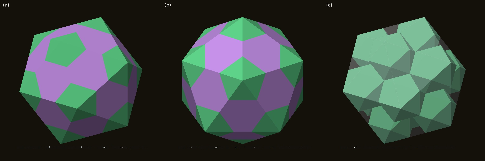
Figure 1.3. The Lotus seed: (a) the filled cluster; (b) down a five-fold axis; (c) its hull, a regular icosahedron of edge φ², over the cage of 12 icosahedra.
The filling. Thirty AXE close the outer grooves, thirty more close the inner ones, 20 FUJI fill the outer corners, and 20 CLEO fill the inner corners around a small icosahedron of edge 1/φ:
I(φ²) = 12 I(1) + I(1/φ) + 60 AXE + 20 FUJI + 20 CLEO (113 pieces, no overlaps, volume (235 + 105√5)/12 = φ⁶ V(I)).
The result is exactly a regular icosahedron of edge φ². Its 20 large faces are each three icosahedron faces and one FUJI base.

Figure 1.4. The Lotus seed pulled apart: (a) the 113-piece build; (b) our 63-piece build. Green: icosahedra and J11; cyan: AXE; purple: FUJI and CLEO; gold: the centre (a) and the dodecahedron (b).
The 63-piece build. We first made this solid in the Polyhedraverse app on 5 October 2026, while working on a dodecahedron problem, by putting a J11 on every pentagon of a dodecahedron. Each J11, together with the cap hidden inside the dodecahedron, is one of the 12 outer icosahedra, so:
I(φ²) = dodecahedron + 12 J11 + 30 AXE + 20 FUJI (63 pieces).
The small centre, the inner AXE and the CLEOs merge into the single dodecahedron. Two standard solids and two gap pieces make it the easiest way to build the Lotus seed by hand (Section 7). The same move, a J11 on every unit pentagon, applied to an icosidodecahedron instead of a dodecahedron gives our UNITY [Icosa-13 study].

Figure 1.5. (a) Hasu, the finned unit: an icosahedron with its share of the gap pieces (21 parts, 45 faces). (b) Twelve Hasu and the centre rebuild the Lotus seed, and each lifts straight out along its axis.
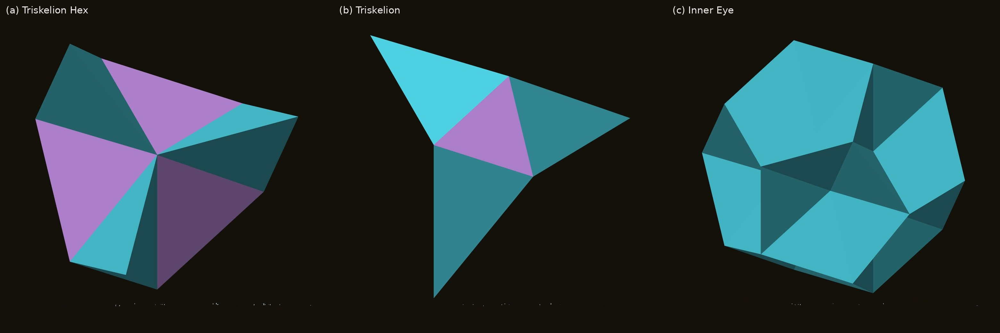
Figure 1.6. The pieces around each dodecahedron corner and the core. (a) Triskelion Hex = FUJI + 3 AXE. (b) Triskelion = CLEO + 3 AXE. (c) Inner Eye = I(1/φ) + 30 AXE + 20 CLEO, the dodecahedron with its 12 caps removed (volume 5φ/2).
The Triskelion has exactly the volume of the pentagonal cap J2, (5 + √5)/24.
The dodecahedron. Adding the 12 caps to the Inner Eye gives the dodecahedron, so
D(1) = I(1/φ) + 12 J2 + 30 AXE + 20 CLEO.
Built in that order, the stages are classical solids [Capturing the In-betweens]:
This is the Dodecahedral Chain: from the icosahedron to its dual through two star solids, with AXE and CLEO doing all the work.
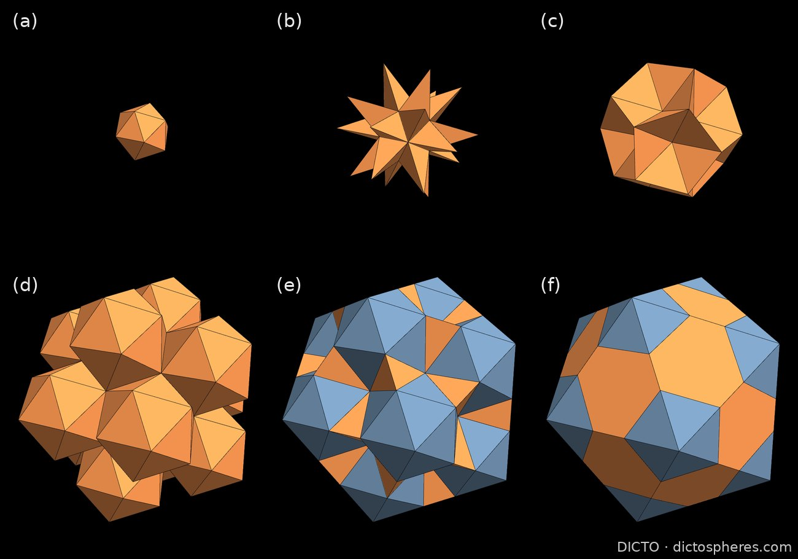
Figure 1.7. The Lotus seed built outward: (a) core icosahedron; (b) + 20 CLEO, the great stellated dodecahedron; (c) + 30 AXE, the excavated dodecahedron; (d) + 12 icosahedra; (e) + 30 AXE; (f) + 20 FUJI, the icosahedron of edge φ². Orange: the pieces added at each step.
The Chain of Karma. The Lotus seed is an icosahedron enlarged by φ², made of icosahedra and the three pieces. Replacing every icosahedron in it by a Lotus seed, and keeping the gap pieces whole, fills the icosahedra of edge φ⁴, φ⁶, … exactly. Steps 1 to 3 have 113, 1,569 and 20,497 pieces [Chain of Karma]. AXE, CLEO and FUJI stay whole at each step, so they appear in every size, one step of φ² apart. The enlarged pieces cannot be cut back into the small ones (their Dehn invariants forbid it), so the Chain is a hierarchy with gap pieces in every size, rather than a self-similar tiling.
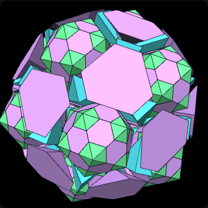
Figure 1.8. The Chain of Karma, step 2: 1,569 pieces filling the icosahedron of edge φ⁴.
The Stella-Corona. On an icosidodecahedron we place 20 icosahedra on the triangles and a King of Pentacles on each of the 12 pentagons: a J2, 10 AXE, 5 CLEO and a small J2, with a flat pentagram on top. The result is closed, every contact is a whole face, and its volume is (120 + 47√5)/3. Stella-Coronas that share icosahedra form a chain along a three-fold axis and a diamond network, the first periodic network of icosahedral clusters in this work [Icosa networks study].
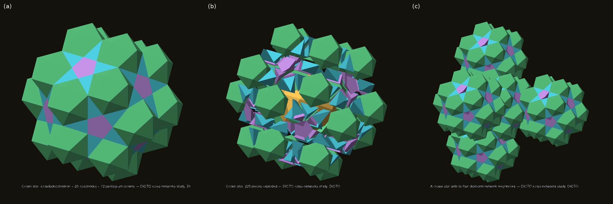
Figure 1.9. The DICTO Stella-Corona: (a) closed; (b) pulled apart; (c) in its diamond network.
AXE and CLEO are Mosseri–Sadoc tiles. Is FUJI made of them?
Volume does not decide it. FUJI has exactly the volume of 3 AXE + CLEO + the smallest Mosseri–Sadoc tile t1 at scale 1/τ.
The Dehn invariant does. Two solids can be cut into each other only if they have equal Dehn invariants: the sum over edges of length ⊗ dihedral angle, with angles counted modulo rational multiples of π. With every angle written in α and δ, and every length as a + b√5:
| 1-part (α, δ) | √5-part (α, δ) | |
|---|---|---|
| FUJI | (3, −15/2) | (0, 3/2) |
| 3 AXE + CLEO + t1′ | (27/2, 15/2) | (−1/2, 1/2) |
The √5-parts differ by (α + 2δ)/2 = (π − arctan 2)/2. Since cos²(arctan 2) = 1/5, and a rational multiple of π with rational cos² can only have cos² equal to 0, 1/4, 1/2, 3/4 or 1, arctan 2 is not a rational multiple of π. So the invariants differ, and no such dissection exists.
No Mosseri–Sadoc mix at this scale or larger. A search over all six tiles at four scales finds other mixes with FUJI's volume and Dehn invariant. The base of FUJI settles them all:
Mixes of smaller Mosseri–Sadoc tiles remain open. CLEO itself fits inside FUJI, with room to spare: it can grow to 1.023 times its size there.
So FUJI is a genuinely new piece, and the Lotus seed needs it. Koca et al. note that the Mosseri–Sadoc tiles alone cannot inflate the icosahedron past edge τ [Koca et al. 2020]. Taking whole icosahedra as pieces, with FUJI in their corners, the Lotus seed reaches φ², and the Chain of Karma carries on without end.
The nets (nets/axe-cleo-fuji-nets.pdf) print on A4 at 45 mm per unit, giving a Lotus seed with edges of about 118 mm. They contain one dodecahedron, 12 J11, 30 AXE and 20 FUJI, with CLEO for the 113-piece build and the star solids. Each net is checked: every face is congruent to the solid's, every edge is either a fold or a numbered glue pair, and nothing overlaps.
To build: glue a J11 on each face of the dodecahedron. Then fill the 30 grooves between neighbouring J11 with AXE, and the 20 hexagonal dents at the dodecahedron's corners with FUJI. The finished solid is a regular icosahedron.
From paper #44, DICTO DOI 10.5281/zenodo.23529497
Theorem: of the five face pyramids of the Platonic solids, only the cube's alone and the tetrahedron's with the octahedron's fill space; the icosahedron's, the Cleo-Icos, needs a partner that is not a face pyramid

Face pyramids. For a Platonic solid with centre O, the face pyramid over a face F is the convex hull of F and O (Figure 2.1). Its dihedral angle along a base edge is half the solid's dihedral angle, since the plane through O and the edge bisects it; along a side edge (from O to a corner) it is 360°/q, where q faces meet at that corner. We write C, T, O, D and I for the face pyramids of the cube, tetrahedron, octahedron, dodecahedron and icosahedron; I is DICTO's Cleo-Icos, reached from his CLEO piece [2, 3].
| Face pyramid | Base edges | Dihedral along a base edge | Side edges | Dihedral along a side edge |
|---|---|---|---|---|
| cube | 4 | 45° = π/4 | 4 | 120° (3 faces at a corner) |
| tetrahedron | 3 | α/2 ≈ 35.26° | 3 | 120° |
| octahedron | 3 | (π − α)/2 ≈ 54.74° | 3 | 90° (4 faces) |
| dodecahedron | 5 | θD/2 ≈ 58.28° | 5 | 120° |
| icosahedron (Cleo-Icos) | 3 | θI/2 ≈ 69.09° | 3 | 72° (5 faces) |
Table 1. The five face pyramids. α = arccos(1/3) ≈ 70.53°, θD = arccos(−1/√5) and θI = arccos(−√5/3) are the dihedral angles of the tetrahedron, dodecahedron and icosahedron; the octahedron's is π − α (its cosine is −1/3) and the cube's π/2.
Filling space. A set U of face pyramids fills space if there is a tiling of space whose tiles are congruent copies (mirror images allowed) of pyramids of U, at finitely many fixed sizes, in any numbers and any positions, every kind in U used, with no face-to-face condition.
Cut each Platonic solid from its centre into identical pyramids, one on every face. Aristotle wrote that the pyramid fills space; DICTO asked whether he could have meant one of these. The theorem gives the complete answer: only the cube's pyramids fill space on their own, and only the tetrahedron's and the octahedron's do it together. The dodecahedron's and the icosahedron's can never be used at all.
The proof rests on a simple fact: wherever pieces meet along an edge, their angles round that edge must add up to a full turn.
Lemma 1 (angles round an edge). Let space be tiled by convex polyhedra, finitely many meeting any bounded set, and let e be an edge of a tile P. For all but finitely many points x of e, the tiles containing x have x either in the relative interior of an edge on the line of e, or in the relative interior of a face whose plane contains that line; the wedge angles at x (the dihedral angles of the tiles with x on an edge) add up to 2π, or to π when one tile has x inside a face (the edge lies on a face).
Proof. Only finitely many tiles meet a neighbourhood of e. Leave out of e the finitely many points that are corners of these tiles, or where an edge of one of them crosses the line of e. At any other point x of e, no tile has x in its interior (it would overlap P), and a tile with x inside an edge has that edge on the line ℓ of e. If a tile T has x inside a face, near x it is a half-space; P lies in the other closed half-space, and so does the line ℓ through x, so the plane contains ℓ. Near x every tile is therefore a wedge or a half-space bounded by planes through ℓ, and in the plane at right angles to ℓ through x they become sectors that cover a disc with disjoint interiors: their angles add up to 2π. A half-space counts π, and there is at most one, since two would leave no room for P. ∎
Lemma 1 is the edge-counting step behind the classical fact that a polyhedron which tiles space has Dehn invariant zero (Debrunner [9]; Lagarias and Moews [10]); we prove it here directly because the tilings may use several kinds of tiles.
Now let h be a map from angles to the rationals that is additive with rational coefficients and has h(π) = 0. At every such point x the values of h at the dihedral angles there add up to h(2π) = 0 or h(π) = 0. Such maps exist with any values on α, θD and θI, because:
The awkward angles of the tetrahedron, dodecahedron and icosahedron are unrelated to one another, so none of them can make up for another.
Lemma 2. π, α, θD and θI are linearly independent over the rationals.
Proof. cos² α = 1/9, cos² θD = 1/5 and cos² θI = 5/9, so tan α = 2√2, tan θD = −2 and tan θI = −2/√5: all three are pure geodetic angles in the sense of Conway, Radin and Sadun [4], with tangents rational multiples of √2, √1 and √5, three different square classes. None is a rational multiple of π: if θ = (m/n)π then eiθ is a root of unity and 2 cos θ an algebraic integer, but (2 cos θ)² is 4/9, 4/5 and 20/9, not integers. (Theorem 2 of [4] writes each angle as a rational multiple of π plus their basis angles; this shows the basis part is not zero.) Suppose a rational combination q1α + q2θD + q3θI is a rational multiple of π. By the Splitting Theorem of [4, Theorem 3], so is each part whose tangents are rational multiples of one square root: q1α, q2θD and q3θI separately; hence q1 = q2 = q3 = 0. ∎
In this basis the cube pyramid's angles are π/4 and 2π/3, the side edges' 2π/3, π/2 and 2π/5, all rational multiples of π (h = 0); the base edges carry ½α (T), ½π − ½α (O), ½θD (D) and ½θI (I). This is the argument of #20 for the Cleo-Icos alone [3, §5.6–5.7], carried out for all five and made rigorous with [4].
Keep count of one awkward angle at a time. A dodecahedron or icosahedron pyramid leaves an angle nothing can complete; a tetrahedron pyramid's angle can be completed only by an octahedron pyramid's, and the other way round.
Proof of (a) and (b). (a) Choose h(θD) = 1 and h(π) = h(α) = h(θI) = 0. The base edges of a D carry h = ½, and every other dihedral angle of every pyramid carries 0. At a point x of a base edge of a D, chosen as in Lemma 1, the values of h add up to at least ½, not 0: a contradiction. The same with h(θI) = 1 excludes I. (b) Choose h(α) = 1, the rest 0: a T's base edges carry +½, an O's −½, all other angles 0. Without O, a base edge of a T gives a sum of at least ½; without T, a base edge of an O gives at most −½. So a set that fills space contains neither D nor I, and contains T exactly when it contains O: it is {C}, {T, O} or {C, T, O}.
And these three ways really work: six cube pyramids make a cube, and the classical octet of tetrahedra and octahedra, cut from their centres, gives the other two.
The three sets fill space. {C}: six cube pyramids make a cube. {T, O}: Maurolico's octet [1] of regular tetrahedra and octahedra, each cut from its centre into its face pyramids. Two tetrahedra on opposite faces of an octahedron make a rhombohedron of 60°, one cell of the face-centred cubic lattice [1]; with lattice vectors (1, 1, 0), (1, 0, 1), (0, 1, 1) the octahedron is 4/3, each tetrahedron 1/3 and the cell 2, and it cuts into 8 octahedron pyramids and 8 tetrahedron pyramids (Figure 2.2, top). Round each edge of the octet, between 2 tetrahedra and 2 octahedra, the pyramids give 4 × α/2 + 4 × (π − α)/2 = 2π. {C, T, O}: place the octet with its octahedra centred at the integer points of odd coordinate sum (corners at distance 1 along the axes) and its tetrahedra in the unit cubes; then every face pyramid lies in a slab k ≤ z ≤ k + 1, so the plane z = 0 is made of pyramid faces. Keep the octet's pyramids below it and fill the half-space above it with unit cubes cut into cube pyramids. ∎
Verification. pyramid_checks.py checks in exact arithmetic every angle in Table 1 (through cos² and the sign of cos), the facts used in Lemma 2, the test (a)–(b) over all 31 non-empty sets of the five pyramids (only {cube}, {tetrahedron, octahedron} and {cube, tetrahedron, octahedron} pass, and with all five allowed D and I are still excluded), the octet cell and its pyramids, and the slabs on a patch of 112 octahedron and 32 tetrahedron pyramids.
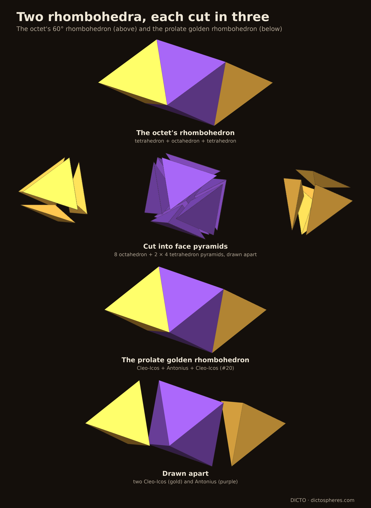
Alone, only the cube's pyramid works; in pairs, only the tetrahedron's with the octahedron's.
Corollary 1 (alone and in pairs). Alone, only the cube pyramid fills space. In pairs, only the tetrahedron and octahedron pyramids do; every other pair fails, the pairs with the cube pyramid because their second piece cannot be used.
When tetrahedron and octahedron pyramids fill space together, they come in equal numbers over large regions, as long as their edges are equal.
Corollary 2 (equal numbers). In any tiling of space by tetrahedron pyramids of edge a and octahedron pyramids of edge b, the numbers NT(R) and NO(R) of each inside a ball of radius R satisfy |a NT(R) − b NO(R)| ≤ C R² for a constant C; so their numbers are in the ratio b : a in the limit, equal when the edges are equal, as in the octet.
Proof. With h(α) = 1, Lemma 1 gives a sum of 0 at all but finitely many points of each edge. Integrate along all edges inside the ball: Σ over tiles of Σ over their edges of h(angle) × (length inside the ball) = 0. A tetrahedron pyramid wholly inside contributes 3 × a × ½, an octahedron pyramid 3 × b × (−½); the tiles that meet the sphere are at most C′R² in number (bounded size, volume bounded below) and contribute a bounded amount each. ∎
The icosahedron's pyramid, the Cleo-Icos, can fill space only with a different kind of partner: DICTO's Antonius, two Cleo-Icos to one Antonius.
Corollary 3 (the Cleo-Icos needs Antonius). The Cleo-Icos fills space with no set of face pyramids; a partner must be another kind of solid. Antonius is one [3, §5.7]: the three lines from the icosahedron's centre to the corners of a face meet at arccos(1/√5) ≈ 63.43°, the angle of the golden rhombus, so they span a prolate golden rhombohedron, and the planes x + y + z = 1 and 2 (in coordinates along those lines) cut it into a Cleo-Icos at each sharp corner and Antonius in the middle, a trigonal antiprism of exactly 4 times the Cleo-Icos's volume (the rhombohedron is 6 times). Golden rhombohedra tile space by a lattice, so Cleo-Icos and Antonius fill space, two to one (Figure 2.2, below). In the counting map's terms: along Antonius's 6 triangle edges the angle is π − θI/2 ≈ 110.91°, which with the Cleo-Icos's θI/2 makes a flat 180°, and along each of its 6 zigzag side edges 108° (the rhombohedron's 72° edges are the 6 at its sharp tips, which belong to the Cleo-Icos); with h(θI) = 1 and edges weighted by length, a Cleo-Icos carries 3 × ½ and Antonius 6 × (−½), −2 times as much, which the two-to-one ratio balances (the Dehn invariant remark of [3]). The same cut of the 60° rhombohedron gives the octet's tetrahedron + octahedron + tetrahedron [3]: in both, the middle third is the partner. (Checked exactly in pyramid_checks.py.)
None: every statement above is proved. An open question, not conjectured here, is which tilings by tetrahedron and octahedron pyramids exist besides the octet cut up and its rearrangements.
The whole solids can all fill space as well, each with the right partners; the table gathers how.
DICTO asked, too, how the whole Platonic solids fill space. His earlier exact work answers it for all five:
| Solid | Fills space with | Source |
|---|---|---|
| cube | alone | classical |
| tetrahedron, octahedron | each other, two tetrahedra to one octahedron: the tetrahedral–octahedral honeycomb (Maurolico; Fuller's octet truss) | classical; Maurolico (1529) [1] |
| dodecahedron | Dogstars: dodecahedra on alternate cubes of a cubic lattice, each a cube with six of Euclid's roofs [5]; the hole in each other cube is the Dogstar; the dodecahedra take (5 + √5)/8 ≈ 90.45% of space | tiling and Dogstar: Hart (1996) [6]; exact: The DICTO Sunstar, #42 [7] |
| icosahedron | DICTO's icosahedral octet: an icosahedron + 6 edge roofs (Admiral Caps) is the regular octahedron, so icosahedra (edge 1) with their roofs in the octet's octahedra, and icosahedra of edge 1/2 with corner and edge caps in its tetrahedra, fill space; the icosahedra take (175 − 75√5)/12 ≈ 60.79% | exact (released finding F21; not a separate paper) [8]; the icosahedron in the octahedron at the golden section is classical (Pacioli; Fuller's Jitterbug) |
Table 2. How each whole Platonic solid fills space with partners. The idea of F21 is DICTO's: "the same principle as the dodecahedron and roofs, but with six" [8].
The pattern is the same for both golden solids. Euclid builds the dodecahedron on a cube with a roof on each face [5]; the roofs are what let dodecahedra sit on a cubic lattice, and what is left is the Dogstar. DICTO moved the roofs to the icosahedron: six edge roofs make it an octahedron, which the octet already places. The main theorem says why such help is needed: a solid's face pyramids carry half its dihedral angle along each base edge, and only for the cube (π/2) is that angle a rational multiple of π; the tetrahedron's and the octahedron's cancel each other (α and π − α), while θD and θI cancel with nothing among the five.
What Aristotle wrote, how it was argued over for two thousand years, and where DICTO's question fits.
"Among surfaces it is agreed that there are three figures which fill the place that contain them—the triangle, the square and the hexagon: among solids only two, the pyramid and the cube" (Aristotle, On the Heavens III.8, 306b, in Guthrie's translation as quoted by Lagarias and Zong [1]). Read as the regular tetrahedron, the claim is wrong: five tetrahedra round an edge leave 7.36° [1]. Lagarias and Zong trace the long correction [1]: Simplicius and Averroës held that twelve regular tetrahedra fill space round a point; others said twenty; Thomas Bradwardine observed that the icosahedron cuts from its centre into twenty congruent tetrahedra but could not decide whether they are regular (they are not: Lagarias and Zong note that their solid angle at the centre is about ten percent larger than a regular tetrahedron's); Paul of Middelburg asserted that no number of regular tetrahedra fills space round a point, arguing from Euclid's Book XIII; and Maurolico (1529) stated that cubes alone, and tetrahedra together with octahedra, fill space. Twenty regular tetrahedra can meet at a point with small gaps [1]: the near miss behind the commentators' twenty.
We do not claim to know what Aristotle meant; Lagarias and Zong take "pyramid" to be the regular tetrahedron [1], the usual reading. DICTO asked whether it could have been Bradwardine's tetrahedron, the Cleo-Icos. Read as a face pyramid, the answer is exact: Aristotle's two figures come out right only as the cube's own pyramid (trivially, since six make the cube) and as the tetrahedron's pyramid taken together with the octahedron's, Maurolico's correction [1] cut from the centres; the Cleo-Icos needs Antonius.
If Aristotle's pyramid is a face pyramid, his claim is now settled exactly; what he himself meant remains unknown.
Read as a statement about face pyramids, Aristotle's claim is settled by the main theorem: the cube's pyramid fills space alone, and the only other way is the tetrahedron's and the octahedron's pyramids together, in asymptotically equal numbers when their edges are equal. That pair is the octet truss cut from its centres, the classical fix that Maurolico gave for the regular solids. The icosahedron's pyramid, the Cleo-Icos, cannot join any set of face pyramids; its golden fix is Antonius, with which it fills the prolate golden rhombohedron two to one (#20). For the whole solids the common thread is Euclid's roof: on the cube it makes the dodecahedron that fills space with Dogstars, and moved to the icosahedron as six edge roofs it makes the octahedron that the octet places. What stays open is which other tilings by tetrahedron and octahedron pyramids exist, and what Aristotle himself meant.
In the sources checked (the full text of the 81 library sources with a text layer listed in the appendix, searched on 21 October 2026; the library's 175 link-only entries were not searched) we did not find a classification of the tilings by the face pyramids of the Platonic solids.
First published in this book, from DICTO's study of 27 October 2026 (studies/2026-10-27-five-pyramids).
Aristotle wrote that the pyramid fills space. The five pyramids cut from the centres of the Platonic solids are the natural candidates, and they lead to the four-dimensional solids of Part III, where each of them turns out to be the core of one. This chapter asks how the five behave when they must meet whole face to whole face, and whether DICTO's own pieces, glued together, make new solids with equilateral faces, new deltahedra.
With the edge of each solid 1, α = arccos(1/3), θD = arccos(−1/√5) and θI = arccos(−√5/3), the five pyramids are (exact values, sympy):
| Pyramid | Faces | Base-edge dihedral | Side-edge dihedral |
|---|---|---|---|
| Cube (C) | square 1; 4 isosceles (1, √3/2, √3/2) | 45° | 120° |
| Tetrahedron (Q) | equilateral 1; 3 isosceles (1, √6/4, √6/4) | α/2 = 35.26° | 120° |
| Octahedron (O) | equilateral 1; 3 right isosceles (1, √2/2, √2/2) | (π − α)/2 = 54.74° | 90° |
| Dodecahedron (D) | regular pentagon 1; 5 isosceles | θD/2 = 58.28° | 120° |
| Icosahedron (Cleo-Icos) | equilateral 1; 3 isosceles, side/base √((5+√5)/8) | θI/2 = 69.09° | 72° |
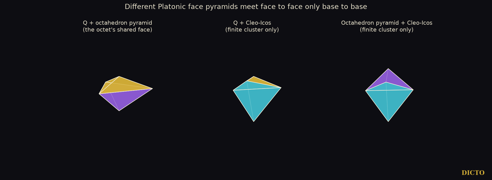
Theorem 1. In a face-to-face tiling by face pyramids, two different face pyramids meet only base to base, and the only tiling that uses two different face pyramids is made of the tetrahedron's and the octahedron's pyramids: the octet truss cut from its centres, and its layer stackings. The Cleo-Icos meets another face pyramid only in finite bipyramids and never in a face-to-face space filling.
Proof. (1) The side faces of different pyramids are never similar: the cosines of their apex angles, 1/3, −1/3, 0, √5/3 and 1/√5, all differ, and no side face is equilateral; so a side face meets only a side face of the same pyramid, and congruence then carries base edge to base edge and apex to apex. (2) The square and the pentagon occur once each; the equilateral bases of the tetrahedron's, octahedron's and icosahedron's pyramids match each other at equal edge. So two different pyramids meet only base to base. (3) Round a side edge every neighbour is the same kind with the same apex, so the 360° is made by 3, 3, 4, 3 or 5 copies, and each pyramid lies inside its whole solid. Round a base edge the pyramids come in pairs of one kind glued on their sides, and a mixed edge star needs as many angles α/2 as (π − α)/2, since these angles are independent over the rationals of π (Chapter 2, Lemma 2): the only mixed star is four of each, 4·α/2 + 4·(π − α)/2 = 2π, the octet edge. Every other mixed star allowed by the angles alone (twenty are listed in the study data) fails the face condition. ∎
So the pyramids are no more sociable than their solids. A network built on the Cleo-Icos needs a partner that is not a face pyramid: Antonius, which fills the golden rhombohedron with two Cleo-Icos (#20, Chapter 2), or the connectors of #47, with which all five Platonic solids, and so all five face pyramids, fill space together.
Seventeen of DICTO's pieces and their relatives carry at least one equilateral face: the regular tetrahedron, octahedron and icosahedron, the half octahedron P, Antonius, the Admiral Cap, the six Mosseri–Sadoc tiles (among them AXE and CLEO, Chapter 1, and the Tricap), the Weirdstone and the Tadpole, and the three triangle-based face pyramids. We glued them whole face to whole congruent face, in every way, mirror images allowed, keeping only clusters whose interiors do not meet, and kept a result when its surface, merged into planar faces, was a closed surface of equilateral triangles of one size enclosing the pieces' total volume. Run A used all pieces and is complete to three pieces (23, 262, 7,162 and 120,020 clusters at one to four pieces); run B used DICTO's pieces alone and reached five (363,319 clusters).
Result. 772 different solids with equilateral faces were found, every one closed. Four have the face pattern of a convex deltahedron and are classical: four Q make the tetrahedron, two P the octahedron, two tetrahedra the triangular bipyramid, one icosahedron itself. None is a variant of a convex deltahedron, with its pattern of faces but another shape. The other 768 are face-gluings of regular tetrahedra, octahedra and icosahedra, a known infinite class; the smallest lie inside the enumeration of deltahedral graphs up to ten corners by Tsuruta, Mitani, Kanamori and Fukui (2014). No solid uses Antonius, the Admiral Cap, AXE, CLEO, the Tricap, the Weirdstone, the Tadpole, the Cleo-Icos or the octahedron's pyramid. Six Admiral Caps on an icosahedron give a deltahedron only all together, as Pacioli's octahedron (#47).
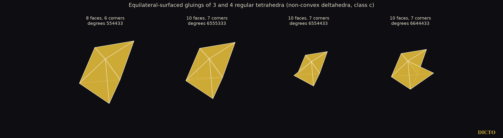
Variants of the regular deltahedra, which DICTO expected to join differently, do exist: one face pattern can have a convex form and non-convex ones (Tsuruta et al., graph 950). They come from denting a solid, pushing a corner in, which removes material; gluing pieces never makes them in this range. Chapter 5 finds such variants where DICTO looked next: in the shadows and slices of the four-dimensional solids.
The counting map of Chapter 2 decides the rest. With h(α) = 1, a solid of nT regular tetrahedra, nO octahedra and nP half octahedra (edge 1) scores 6nT − 12nO − 6nP; with h(θI) = 1, a solid with nI icosahedra scores 30nI. Every solid with an icosahedron scores above zero, so it fills space neither alone nor with face pyramids. A solid of tetrahedra and octahedra with equilateral faces never has a tetrahedron on an octahedron face (the faces would lie in one plane), so it is all tetrahedra or all octahedra and its score is not zero: none of the 772 solids fills space alone.
Gluings of five or more pieces with the regular solids, and of six or more of DICTO's pieces alone, were not searched; the search grows about fourteen times per piece. Space fillings of tetrahedron gluings with octahedron pyramids, and of icosahedra with Antonius, are not excluded by the counting map and were not decided. Face shapes, angles, face matching and the counting arguments are exact; the search, its overlap tests and the sorting into distinct solids are in floating point and are a screening.
Face to face, the five pyramids keep to their solids: only the tetrahedron's and the octahedron's share a network, the octet, and the Cleo-Icos finds partners only outside the family. Glued together, DICTO's pieces make no new deltahedron up to four pieces (five for his own pieces). The new shapes DICTO was looking for lie elsewhere: in the four-dimensional solids, whose shadows and slices are the subject of Part II, and whose cores, Part III shows, are exactly these five pyramids.
DICTO's reference library, five queries ("non-convex deltahedra enumeration"; "deltahedron equilateral triangle faces polyhedra list"; "face-to-face gluing of regular tetrahedra octahedra icosahedra polyhedra"; "central pyramids of Platonic solids space filling"; "Mosseri Sadoc golden tetrahedra tiles"), with the items returned and read: Johnson 1966; Sommerville 1922; Kramer 1982; Torquato and Jiao 2009; Lagarias and Zong 2012; Koca, Koc, Koca and Al-Siyabi 2020; Papadopolos and Ogievetsky 1999; Akpanya, Goertzen and Niemeyer 2024; and others listed in the study. Web: the search "non-convex deltahedra enumeration Cundy Trigg Freudenthal van der Waerden", with en.wikipedia.org/wiki/Deltahedron and Tsuruta et al. 2014 (ICGG 2014, pages 1–4) read. DICTO's papers #19, #20, #44 and #47.
From paper #77, DICTO DOI 10.5281/zenodo.23779962
A New Law of Aristotle's Pyramids: the five pyramids keep to their solids
Aristotle wrote that the pyramid fills space. Cut the five Platonic solids from their centres and five pyramids appear, the natural ones to try. Here they must meet whole face to whole face, as stones do in a wall.
Paper #44 settled the loose case: a set of face pyramids fills space, touching in any way, exactly when it is the cube's alone, the tetrahedron's with the octahedron's, or these three together. Aristotle's pyramids are therefore the cores of the regular solids, and, as Part III of the book shows, of the four-dimensional ones. DICTO proposed two further lines: which of the five pyramids can share a network when every contact is a whole face, and which new deltahedra, solids with only equilateral triangles as faces, his own pieces make when glued together. Chapter 3 stated the first answer and searched to five pieces. This chapter gives the full face-to-face classification with a short proof (Section 3), carries the search to six pieces (Section 4), and identifies the one new result of that search with a known dissection.
With the edge of each solid 1, α = arccos(1/3) (the tetrahedron's dihedral angle), θD = arccos(−1/√5) and θI = arccos(−√5/3) (the dodecahedron's and the icosahedron's). The pyramids are C, T, O, D and I (the Cleo-Icos); exact values from the study of 27 October 2026 (sympy):
| Pyramid | Faces | Apex angle of a side face (cos) | Base-edge dihedral | Side-edge dihedral |
|---|---|---|---|---|
| Cube (C) | square 1; 4 isosceles (1, √3/2, √3/2) | 1/3 | π/4 = 45° | 120° |
| Tetrahedron (T) | equilateral 1; 3 isosceles (1, √6/4, √6/4) | −1/3 | α/2 = 35.26° | 120° |
| Octahedron (O) | equilateral 1; 3 right isosceles (1, √2/2, √2/2) | 0 | (π − α)/2 = 54.74° | 90° |
| Dodecahedron (D) | regular pentagon 1; 5 isosceles | √5/3 | θD/2 = 58.28° | 120° |
| Icosahedron (I, Cleo-Icos) | equilateral 1; 3 isosceles, side/base √((5+√5)/8) | 1/√5 | θI/2 = 69.09° | 72° |
Table 1. The five face pyramids. A side edge runs from the apex (the solid's centre) to a corner of the base; its dihedral angle is 2π divided by the number of faces at a corner of the solid.
Two different pyramids never share a side face, so round any side edge all the pieces are of one kind, and they close up into their whole solid. What is left is a question about whole solids, and the angles answer it.
Theorem 1. Let space be tiled face to face by copies of the five face pyramids, mirror images allowed. Then (a) the pyramids with a common apex form one whole Platonic solid, so the tiling is a face-to-face tiling by whole Platonic solids, each cut from its centre; (b) that tiling is either the cubic tiling, or a tiling by regular tetrahedra and octahedra in which every edge has two tetrahedra and two octahedra round it; (c) D and I occur in no such tiling, and two different pyramids meet only base to base: T with O in the tilings of (b), I with T or O only in finite clusters (bipyramids, Figure 4.1).
Proof. Faces. The side faces of different pyramids are never congruent: the cosines of their apex angles (Table 1) all differ, and no side face is equilateral. In each side face the apex is the corner between the two equal sides, so a congruence between side faces of one pyramid kind carries apex to apex and base edge to base edge. The square occurs only on C and the pentagon only on D; the equilateral bases of T, O and I match one another.
(a) Side edges. In a face-to-face tiling the tiles round an edge follow one another, each sharing a whole face with the next. Round a side edge of a pyramid P, the next tile shares a side face of P, so it is a pyramid of the same kind with the same apex, and the edge is again a side edge of it; going round, every tile at the edge is of P's kind with the same apex. The side-edge dihedral angles 120°, 120°, 90°, 120° and 72° divide 360° into 3, 3, 4, 3 and 5 parts: exactly the number of faces round a corner of the solid. So the pyramids at one apex, joined across their side faces, close up round every side edge, and together they are the whole solid. The tiling by pyramids is a tiling by whole solids, meeting face to face, since their faces are the pyramids' bases.
(b) Edges of the whole solids. A cube's square meets only another cube, so a tiling with a cube has only cubes (space is connected, and the tile next to a cube across any face is a cube); a face-to-face tiling by cubes is the cubic tiling. Likewise a dodecahedron meets only dodecahedra, and round an edge of a tiling by dodecahedra n θD = 2π, which is impossible because θD is not a rational multiple of π (#44, Lemma 2). In a tiling by tetrahedra, octahedra and icosahedra, the angles round an edge give nT α + nO (π − α) + nI θI = 2π. Since π, α and θI are linearly independent over the rationals (#44, Lemma 2, from the Splitting Theorem of Conway, Radin and Sadun), nI = 0, nT = nO, and then nO π = 2π: two tetrahedra and two octahedra round every edge.
(c) follows from (a), (b) and the face facts: the only face two different pyramids share is an equilateral base, so different pyramids meet base to base; in a tiling only T and O occur, and I meets T or O only in clusters that are not part of any tiling. ∎

The octet truss, Maurolico's tiling of tetrahedra and octahedra (Lagarias and Zong 2012), has two of each round every edge, so it and its tetrahedra and octahedra cut from their centres realise (b); so do the stackings of its layers, which keep the same edge condition. Theorem 1 does not depend on which other tetrahedron–octahedron tilings exist, and we do not classify them here.
Corollary 1. The Cleo-Icos lies in no face-to-face tiling by face pyramids. A network on the Cleo-Icos needs a partner that is not a face pyramid: Antonius, with which two Cleo-Icos fill the prolate golden rhombohedron (#20), or the connectors of #47, with which all five Platonic solids fill space together.
Comparison with the angle count alone. Before using the faces, the angles round an edge already leave 26 edge stars (combinations of side-edge and base-edge dihedral angles making 2π), 20 of them mixing pyramid kinds; for example two cube pyramids on their bases with one tetrahedron and one octahedron pyramid on theirs and two octahedron pyramids on their sides. The face facts above remove all 20 at once except the octet's: four tetrahedron and four octahedron pyramids, on their bases, round one edge. The list is in the study data (q1-pyramids.json).
If the pyramids will not make new networks, perhaps DICTO's own pieces, glued together, make new solids with only triangles on the outside.
Chapter 3 glued seventeen pieces with at least one equilateral face, whole face to whole congruent face, in every way: all of them to four pieces, DICTO's pieces alone to five. It found 772 solids with equilateral faces, every one a regular solid cut up again or a face-gluing of regular tetrahedra, octahedra and icosahedra; none was new. Here the second search is carried to six pieces.
Pieces. 21 entries: the three face pyramids with an equilateral base (T, O and the Cleo-Icos); Antonius; the Admiral Cap; the six Mosseri–Sadoc tiles t1–t6, among them the Hound Tooth (t2), the Tricap (t3), CLEO (t4) and AXE (t6), each also at its second scale (factor φ or 1/φ) so that tiles meet on their (1, 1, φ) and (1, φ, φ) faces; and the Weirdstone and the Tadpole with their mirror images. The regular solids themselves and the half octahedron are left out.
Method. A piece is glued whole face to whole congruent face, mirror images allowed; clusters whose interiors meet are dropped (intersection volume, manifold3d); the same cluster reached twice is kept once (a labelled distance signature). A cluster is a result when its surface, merged into planar faces, is a closed surface of equilateral triangles of one size enclosing the pieces' total volume. The search is complete to two pieces; from the third piece on, each new piece covers a face of the cluster that is not equilateral, since such a face must be covered before the cluster can be a deltahedron, and a cluster with only equilateral faces left is tested but not grown. It ran on dicto-big-brother in 4,165 seconds with 12 processes.
| Pieces | 2 | 3 | 4 | 5 | 6 |
|---|---|---|---|---|---|
| Different clusters | 191 | 1,834 | 25,683 | 363,319 | 5,143,972 |
| Solids with equilateral faces (new at that size) | 0 | 0 | 1 | 0 | 2 |
Table 2. The six-piece search. The counts to five pieces repeat those of Chapter 3 exactly; the six-piece level is new.
Theorem 2 (search). Within the search of Table 2, DICTO's pieces make exactly two solids with equilateral faces: the regular tetrahedron, from four tetrahedron pyramids, and the pentagonal bipyramid J13, from four t1 and two Hound Tooth (t2), found at both scales of the tiles (edge 1 and edge 1/φ). The J13 is two pentagonal pyramids t1 + t2 + t1 put base to base.
Checks. The J13 found has 7 corners, 15 edges and 10 faces; its five equator corners lie in one plane (error 0) at distance 1/(2 sin 36°) from the axis, its apexes at height √((5 − √5)/10) above and below, every edge has length 1 to 2 × 10−16, and its volume is 0.603006, which is (5 + √5)/12, the volume of J13 with edge 1. Each of the six pieces lies on one side of the equator plane: one t1, the t2 and the other t1 above, their mirror images below. The Mosseri–Sadoc tiles have exact corners in ℚ(√5), so the identification is exact; the search itself, its overlap test and the sorting into distinct clusters are in floating point and are a screening.

Koca, Koc, Koca and Al-Siyabi (2020, p. 6) build the pentagonal pyramid as t1 + t2 + t1, as the projection of a 5-simplex, and use it to build the icosahedron from the tiles. Two of their pyramids on a common pentagon make the J13, so the six-piece result is a direct consequence of their dissection. No solid of the search uses Antonius, the Admiral Cap, the Tricap, CLEO, AXE, t5, the Weirdstone, the Tadpole, the octahedron's pyramid or the Cleo-Icos.

Kaleidohedra, DICTO → 3D+ → Aristotle's Pyramid (kaleidohedra.dictospheres.com/?open=aristotle) shows the five pyramids drawn apart from their solids, the cube's pyramids and the octet cut up, which are the two kinds of tiling of Theorem 1, and the golden fix with Antonius of Corollary 1.
New. Theorem 1 is new as far as the sources checked show: it is the complete classification of the face-to-face tilings of space by the five face pyramids, the case DICTO proposed after #44. Every such tiling is a tiling by whole Platonic solids cut from their centres, either the cubic tiling or a tetrahedron–octahedron tiling such as the octet; the dodecahedron's pyramid and the Cleo-Icos take part in none, and two different pyramids meet only base to base. Together with #44, which settled the case where pieces may touch in any way, this completes the answer to DICTO's reading of Aristotle for the face pyramids: loose or face to face, the only sets that fill space are the cube's pyramid, and the tetrahedron's with the octahedron's. Face to face the answer is sharper still: the pyramids can only rebuild their own solids.
New, and negative. The six-piece search, 5,143,972 different clusters of DICTO's pieces, gives a negative result: glued face to face, his pieces make no new deltahedron up to six pieces, only the tetrahedron and the pentagonal bipyramid. It is a screening, complete to two pieces and restricted beyond.
Known. The one solid the search added, the pentagonal bipyramid from four t1 and two Hound Tooth, is two pentagonal pyramids of Koca, Koc, Koca and Al-Siyabi (2020). The tools of the proof, the face pyramids, the octet and the angle independence, are classical or come from #44.
The new shapes DICTO was looking for lie elsewhere: where the Cleo-Icos finds its partners outside the family (Antonius, #20; the connectors of #47), and in the four-dimensional solids, whose cores are these same pyramids.
From paper #62, DICTO DOI 10.5281/zenodo.23687223
Deltahedra that join differently: the triangle-faced shadows and slices of the 5-, 16-, 24- and 600-cell
DICTO's idea (27 October 2026) was that "4th dimensional shadows may more closely represent any new deltahedron type family than they do the original ones", and that such variants, set against the regular ones, would be "different shapes with different attachability". On the same day a search for new deltahedra glued from DICTO's pieces (AXE, CLEO, Cleo-Icos, Admiral Cap, Tricap and others; up to 4 pieces of all kinds, up to 5 of DICTO's) had found 772 solids with all faces equilateral, every one of them a gluing of regular tetrahedra, octahedra and icosahedra: no new deltahedron and no variant. The fourth dimension was the next place to look, and it gave the following.
Main result. The triangle-faced shadows and slices of the 5-, 16-, 24- and 600-cell give deltahedra of two new kinds.
(a) Variants that join differently (§4). The 5-cell's edge-first shadow (TBP-5) has the pattern of the triangular bipyramid J12 with unequal edges, and three copies of it close face to face round an edge. The 16-cell's edge-first shadow (OCT-16) has the pattern of the octahedron with unequal edges, and it fills space on its own.
(b) Equal-edged solids from the 600-cell (§5, §6). Four of the 600-cell's shadows and slices can be rebuilt exactly with every edge the same length, keeping their pattern of triangles: the vertex-first shadow (42 vertices, 80 triangles) as a 12-dented icosahedron; the slices at the dodecahedron height (32 vertices, 60 triangles) as the excavated and the augmented dodecahedron; the outer edge-first slices (17 vertices, 30 triangles) as Shadow-17, two J11 glued on their pentagons; and the 48-vertex cell-first slice (92 triangles) as Slice-48, with tetrahedral symmetry. All four forms are non-convex.
All arithmetic is exact in ℚ(√5) (numbers a + b√5, a and b rational, with exact signs); floating point only proposes convex hulls, and every hull face is then checked exactly (all points on one side, every edge in two faces, Euler characteristic 2). For each solid and each of four directions — through a vertex, the middle of an edge, the centre of a triangle and the centre of a cell — we take the shadow (the outline of the projection into the 3-space at right angles), the layers (the outline of the vertices at one height) and the slices (the true cut by a 3-space at right angles, through the centre and at every vertex height: the vertices on it plus every edge crossing it). This gives 223 records and 157 distinct solids, 27 of which have all faces triangles. Each of the 27 is compared with the eight convex deltahedra by graph isomorphism; for the patterns that match none of the eight, an equilateral form is sought (least squares on the edge lengths, as in Tsuruta et al. 2014) and confirmed exactly where found.
The shadows and slices themselves are convex, as every projection and cut of a convex solid is, and in general their edges are unequal. The question for each is whether its pattern of triangles can be rebuilt with all edges equal. Where that needs some edges folded inwards, the equilateral form is non-convex: the dents belong to that form, not to the 4D solid.
The table lists the all-triangle shadows and slices other than regular tetrahedra, octahedra and icosahedra, grouped by pattern, with the equilateral form found for each pattern.
| 4D source | Solid | Pattern | Edge ratio | Equilateral form |
|---|---|---|---|---|
| 5-cell | edge-first shadow (TBP-5) | triangular bipyramid J12 | √(12/7) = 1.309 | variant of J12 |
| 16-cell | edge-first shadow = central slice (OCT-16) | octahedron | 2/√3 = 1.155 | variant of the octahedron |
| 600-cell | vertex-first shadow = central slice (42, 80) | pentakis icosidodecahedron | 2/√3 | 12-dented icosahedron (exact) |
| 600-cell | vertex-first slices at the dodecahedron height (32, 60) | pentakis dodecahedron | 1.144 | augmented dodecahedron; excavated dodecahedron (both exact) |
| 600-cell | edge-first slices (17, 30): Shadow-17 | none of the 8 | 2.927 | two J11 on their pentagons (exact) |
| 16-, 600-cell | face- and edge-first (8 or 12 vertices) | hexagonal, decagonal bipyramids | 1.41–2.29 | none can exist (Prop. 2) |
| 600-cell | six large slices (28–72 vertices) | none of the 8 | 2.29–4.81 | §6 |
All other all-triangle results are the regular tetrahedron, octahedron or icosahedron, and each is a cell or vertex figure of its 4D solid. Two supporting propositions fix what the table leaves out.
Proposition 1. No shadow, layer or slice of the 5-, 16-, 24- or 600-cell along the four main directions is a regular deltahedron, except copies of the solid's own cells and vertex figures. Among the others, the only patterns of a convex deltahedron that occur are those of the triangular bipyramid and the octahedron, each with unequal edges.
Proposition 2. A bipyramid over an n-gon with all edges equal exists only for n ≤ 5: for n ≥ 6 the equilateral apex would lie in the plane of the polygon or the solid would cross itself. So the hexagonal and decagonal bipyramid patterns of the 16- and 600-cell have no equilateral form.

TBP-5, the 5-cell's edge-first shadow, has three edges of length √2 and six of length √(7/6). Its faces match no face of J12. Its base edges have a dihedral angle of exactly 120°, so three copies of TBP-5 close face to face round a base edge; regular copies of J12 close no such ring. Its side edges have dihedral angle arccos(1/8), which closes no star of copies, so neither TBP-5 nor J12 fills space.
OCT-16, the 16-cell's edge-first shadow, is a square bipyramid: two copies of the pyramid that joins the centre of a cube to one of its faces, glued base to base. Its dihedral angles are 90° and 120°, and it fills space on its own, face to face: it is the cell of the square bipyramidal honeycomb, a known tiling (§8). The regular octahedron fills space only together with tetrahedra. The angles alone would allow a mixed star round an edge (2·90° + 70.53° + 109.47° = 360°), but the faces of OCT-16 do not match those of the regular octahedron and tetrahedron, so the variant and the regular family do not join face to face.
Both variants therefore differ from their regular counterparts in shape and in how they join, as DICTO expected.
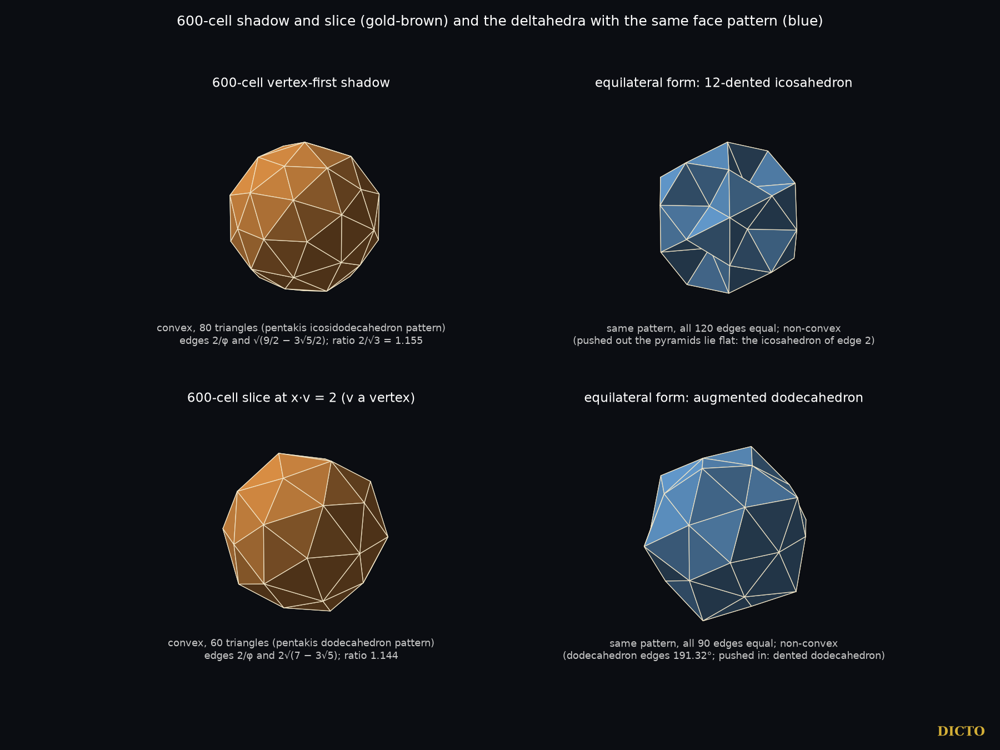
The 600-cell's vertex-first shadow is also its central slice, with 42 vertices and 80 triangles. Its equilateral form is an icosahedron with a shallow dent at each vertex (placeholder name: 12-dented icosahedron). The vertex-first slices at the dodecahedron height (32 vertices, 60 triangles) have two equilateral forms: the excavated dodecahedron, a known deltahedron, with its pyramids dented inward, and the augmented dodecahedron, with its pyramids pointing outward. The names 12-dented icosahedron and augmented dodecahedron are placeholders; both describe obvious constructions, and neither solid is claimed new.
Shadow-17. The 600-cell's edge-first slices at the outer heights have 17 vertices and 30 triangles and five-fold symmetry: a tip at each end and three rings of five vertices between them, with the vertices of the middle ring of degree 6. An equilateral form was first found numerically. DICTO's idea of cutting the pattern in halves identified it: cut at the middle ring, and each half is a J11, the gyroelongated pentagonal pyramid (the diminished icosahedron). Shadow-17's equilateral form is two J11 glued on their pentagons. This form is exact by construction, with every edge 1, and all 136 corner-to-corner distances of the numerical form agree with it to 4·10⁻¹⁶. Its five folded edges are the edges of the shared pentagon, where the dihedral angles of the two J11 add to 2 × 100.81° = 201.62°. J11 is the piece with which DICTO's work began: it fills the gaps between dodecahedra and icosahedra.
One of the 600-cell's six larger all-triangle slice patterns, the 48-vertex cell-first slice, has an exact equilateral form with its full symmetry: Slice-48, described at the end of this section. This section gives the method by which all six were solved and the results for each.
The six patterns have 28 to 72 vertices, with rings of high-degree vertices (7 to 10 triangles meeting at a vertex) between tips of degree 5. Cutting them in halves or caps, as for Shadow-17, matched no known piece, so each was solved directly. The exact symmetry group of each slice equals the full symmetry group of its triangle pattern. Keeping that symmetry, one vertex of each orbit is placed in the subspace fixed by its stabiliser, and each orbit of edges gives one equation |edge|² = 1; every system is square (as many equations as unknowns). The number of complex solutions of each system was found exactly over ℚ(√5) (Singular); every solution was found and refined to 120 digits, and a system counts as complete only when the number of solutions found equals the exact count. Every real solution was then tested for a proper embedding.
| Slice (600-cell) | Vertices, triangles | Symmetry | Solutions (complex / real) | Equilateral form |
|---|---|---|---|---|
| vertex-first, at ±(√5−1) | 72, 140 | Ih | 8 / 4 | none: vertices coincide |
| edge-first, at ±(3+√5)/2 | 32, 60 | D5d | 128 / 48 | none: edges pierce faces, or faces touch |
| face-first, at ±(4+2√5)/3 | 30, 56 | D3d | 464 / 104 | none: edges pierce faces, or faces touch |
| cell-first, at ±(5+3√5)/4 | 28, 52 | Td | 32 / 12 | none: edges pierce or cross, vertices coincide |
| cell-first, at ±(3+√5)/2 | 42, 80 | Td | 96 / 32 | none: every solution crosses itself |
| cell-first, at ±(2+√5)/2 | 48, 92 | Td | 192 / 48 | Slice-48 (one shape; its two solutions differ by a half-turn) |
The systems of the 72-, 32-, 28- and 42-vertex slices were also solved with only their rotation group kept, and again no form exists; the real solution counts of the same four systems were rechecked exactly.
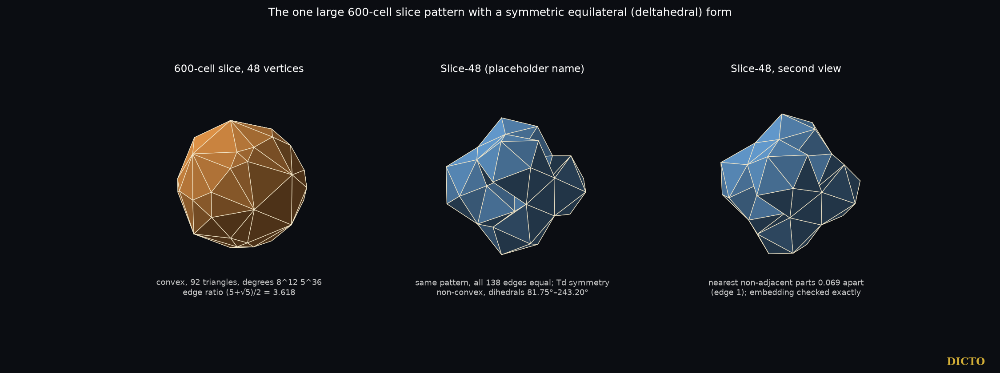
Unlike Shadow-17, Slice-48 contains no piece of the icosahedron: it has no dihedral angle of 138.19° and no pentagonal cap. It is not among the non-convex deltahedra we checked (§8); since we did not read all the original papers, we do not claim it new. Forms with less symmetry than the slice's group are not excluded; the rotation-only systems of the 30- and 48-vertex slices did not finish in 50 minutes.
The vertex-first "sections" of the 600-cell that are often listed — icosahedron, dodecahedron, icosahedron, icosidodecahedron — are the outlines of its vertex layers. A true cut at the dodecahedron height or at the equator also meets edges that cross it, and adds their midpoints: the true central section is the 42-vertex solid of §5, with the same pattern, edge lengths and angles as the shadow. This was checked exactly and with an independent floating-point computation.
Coxeter's Regular Polytopes treats the polytopes, their projections and the vertex-first sections of the 600-cell. The eight convex deltahedra are classical (Freudenthal and van der Waerden 1947); non-convex equilateral realisations and dented variants of deltahedral patterns are studied by Tsuruta et al. (2014). For Slice-48 we also checked the biform deltahedra (Cundy; Olshevsky), the isohedral deltahedra (Shephard; McNeill) and Trigg's spiral deltahedra, through their Wikipedia summaries. The square bipyramidal honeycomb and the excavated dodecahedron are known. In the sources checked, we did not find the comparison of the 4D shadows and slices with the deltahedra, the attachability of the variants, or the identification of Shadow-17.
| 600-cell shadow or slice | Triangles | Rebuilt with equal edges |
|---|---|---|
| vertex-first shadow = central slice (42 vertices) | 80 | 12-dented icosahedron: an icosahedron with a shallow dent at each of its 12 vertices |
| vertex-first slices at the dodecahedron height (32 vertices) | 60 | excavated dodecahedron (dents inward; known) and augmented dodecahedron (pyramids outward) |
| edge-first slices at the outer heights (17 vertices) | 30 | Shadow-17: two J11 glued on their pentagons |
| cell-first slices with 48 vertices | 92 | Slice-48: tetrahedral symmetry, dihedral angles 81.75° to 243.20° |
Shadow-17 is built from two copies of J11, the piece with which DICTO's work began. Slice-48 is the largest of the four: 92 equal triangles with the full tetrahedral symmetry of its slice, found by solving all six large slices of the 600-cell exactly.
From paper #63, DICTO DOI 10.5281/zenodo.23690856
An exact atlas of the slices and shadows of the 600-cell
“Begin at the beginning,” the King said gravely, “and go on till you come to the end: then stop.” — Alice's Adventures in Wonderland, ch. 12
That is the plan of this chapter: start at the centre of the 600-cell and cut it, height by height, until the cut leaves it at the tip. DICTO proposed that the 600-cell could be assembled into a definitive picture, every part proved. Our previous paper (#62, Shadows of the Fourth Dimension) found which of its slices have only triangular faces, and which of those can be rebuilt with every edge equal; here we map every slice. The problem is old. Aristotle wrote that among solids the pyramid fills space (On the Heavens III.8); his commentators argued over how many tetrahedra meet round a point, twelve or twenty, and Thomas Bradwardine saw that the icosahedron cuts from its centre into twenty equal tetrahedra without deciding whether they are regular (Lagarias and Zong, 2012; our #44, Aristotle's Pyramid). They are not: they are the Cleo-Icos. Kepler nested the Platonic solids in shells (Mysterium Cosmographicum, 1596). In the 600-cell, found by Schläfli about 1852, twenty regular tetrahedra do close round every vertex, and §6 shows its 600 cells in shells round such a core. The title is DICTO's: the 600-cell belongs to the White Queen of Through the Looking-Glass, who practised believing impossible things (§7).
The 600-cell is taken with its 120 vertices at distance 2 from the centre: the 8 permutations of (±2, 0, 0, 0), the 16 points (±1, ±1, ±1, ±1) and the 96 even permutations of (±φ, ±1, ±1/φ, 0), where φ = (1+√5)/2. Its edges have length √5 − 1. All arithmetic is exact in ℚ(√5). For each direction d, the height of a point x is x·d, and we sort the vertices by height. The slice at height h is the convex hull of the vertices at that height together with the points where edges of the 600-cell cross that height. Hulls are proposed in floating point, and every face is then verified exactly. The checks, run on every slice, are these. Repeated points are merged by exact comparison. For each proposed face, the plane through three of its corners is checked to support the slice: every point lies on it or strictly on one side, decided by the exact sign of a number in ℚ(√5). The face is then all the points on that plane, ordered by an exact two-dimensional hull, and turned to face outward by an exact sign. Finally every edge of the slice must lie in exactly two faces, and the counts must satisfy V − E + F = 2. A closed surface of supporting faces is the boundary of the hull, so a face missed in floating point would show as an edge in only one face.
In each direction, d is the vertex, the edge midpoint, the triangle centre or the cell centre itself, not a unit vector: vertex-first d = (2, 0, 0, 0); edge-first d = ((5+√5)/4, 1/2, (√5−1)/4, 0), the midpoint of the edge from (2, 0, 0, 0) to (φ, 1, 1/φ, 0); face-first d = (1+√5/3, 2/3, 0, 0), the centre of the triangle with corners (2, 0, 0, 0), (φ, 1, 1/φ, 0) and (φ, 1, −1/φ, 0); cell-first d = ((7+3√5)/8, (3+√5)/8, 0, 1/4), the centre of the cell with corners (2, 0, 0, 0), (φ, 1, 1/φ, 0), (φ, 1, −1/φ, 0) and (φ, 1/φ, 0, 1). Each d is the average of the corners named. Since d is not a unit vector, heights compare within one direction only. The 600-cell is centrally symmetric, so the far half of each direction mirrors the near half; we list the near half, from the centre to the tip.
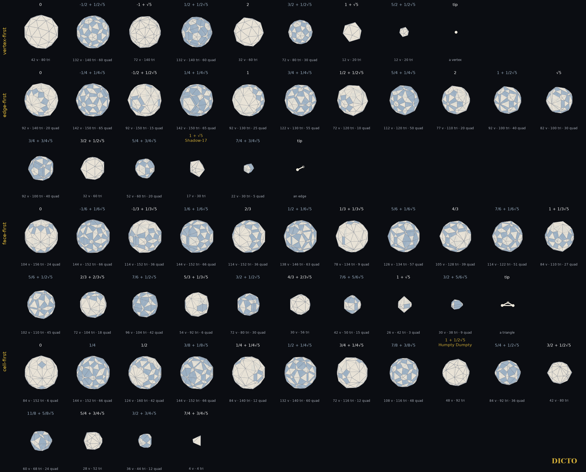
| Direction | Vertex heights (centre to tip) | Gaps | Slice patterns | Tip | Largest slice |
|---|---|---|---|---|---|
| vertex-first | 5 | 4 | 9 | a vertex | 132 vertices |
| edge-first | 9 | 8 | 17 | an edge | 142 vertices |
| face-first | 11 | 10 | 21 | a triangle | 144 vertices |
| cell-first | 8 | 7 | 15 | a tetrahedron | 144 vertices |
| total | 62 |
Every slice has only triangles and four-sided faces. Each face is the cross-section of one tetrahedral cell, a triangle or a four-sided face, or else a triangle of the 600-cell lying in the cut. A four-sided face appears exactly where the cut crosses a cell through four of its edges. The atlas, which cuts each gap at its middle height, has 1636 four-sided faces, and exactly 46 of them are squares, checked exactly. The squares are exactly the cuts through the middle of a cell, parallel to two opposite edges: each is the equator of the regular octahedron that joins the midpoints of that cell's six edges (edge (√5 − 1)/2 = 1/φ). Moved off the middle of the cell, such a cut is a rectangle. The 104 kites are explained in the same way: a kite appears exactly where a cell sits symmetrically across the cut, turned so that its four corners lie at four different heights, −p, −q, q and p from the cut. The half-turn of the cell that exchanges the corners at −p and p, and those at −q and q, reverses the heights and so maps the cut onto itself; on the four-sided face it fixes two opposite corners and exchanges the other two, a mirror along a diagonal (checked exactly: 104 kites, 104 such cells). The remaining faces are rectangles, isosceles trapezia and general quadrilaterals.
| Direction | Height | Vertices, triangles | What it is |
|---|---|---|---|
| vertex-first | 0 (centre) | 42, 80 | the central slice; equal-edged form: the 12-dented icosahedron (#62) |
| vertex-first | √5 − 1 | 72, 140 | no equal-edged form with its full symmetry (#62) |
| vertex-first | 2 | 32, 60 | equal-edged forms: excavated and augmented dodecahedron (#62) |
| vertex-first | 1 + √5 | 12, 20 | a regular icosahedron: the twelve neighbours of the tip vertex |
| vertex-first | the gap from 1 + √5 to 4 | 12, 20 | a regular icosahedron: the vertex figure, cut across the twelve edges that meet the tip |
| edge-first | (3+√5)/2 | 32, 60 | no equal-edged form with its full symmetry (#62) |
| edge-first | 1 + √5 | 17, 30 | Shadow-17: two J11 glued on their pentagons (#62) |
| face-first | (4+2√5)/3 | 30, 56 | no equal-edged form with its full symmetry (#62) |
| cell-first | 1 + √5/2 | 48, 92 | Humpty Dumpty, a convex egg; forced to equal edges it becomes Fallen Humpty (§7) |
| cell-first | (3+√5)/2 | 42, 80 | no equal-edged form with its full symmetry (#62) |
| cell-first | (5+3√5)/4 | 28, 52 | no equal-edged form with its full symmetry (#62) |
| cell-first | (7+3√5)/4 (tip) | 4, 4 | a regular tetrahedron: the cell at the tip |
The other 50 slice patterns all contain four-sided faces. Of the twelve, the two regular icosahedra and the tetrahedron are the 600-cell's own vertex figure and cell; the other nine are the all-triangle patterns studied in #62.
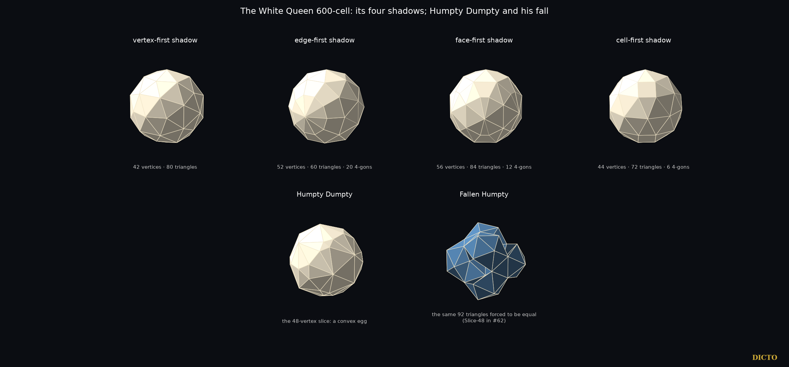
The shadows are the projections of the 600-cell along the four directions, and all four are convex. The vertex-first shadow has 42 vertices and 80 triangles, the same pattern as the central slice (#62). The edge-first shadow has 52 vertices, 60 triangles and 20 four-sided faces; the face-first shadow 56 vertices, 84 triangles and 12 four-sided faces; the cell-first shadow 44 vertices, 72 triangles and 6 four-sided faces.
Halves. In each main view, every cell of the 600-cell faces the viewer, faces away, or is seen side-on, decided exactly by the sign of (cell centre)·d. The front cells fill the shadow exactly once, without gaps or overlaps, and so do the back cells. Checked exactly: in each view the projected volumes of the front cells add up to the volume of the shadow, and so do those of the back cells. The side-on cells flatten into the shadow's surface. The front cells together are the shadow's front layer. Two front cells are of one kind when their projections have the same six edge lengths.
| View | Front | Back | Side-on | Kinds of front piece |
|---|---|---|---|---|
| vertex-first | 270 | 270 | 60 | 7 |
| edge-first | 290 | 290 | 20 | 22 |
| face-first | 288 | 288 | 24 | 33 |
| cell-first | 273 | 273 | 54 | 20 |
The six turnings. Any two of the four main views span a plane in which the view can turn from one to the other: six turnings in all. Along a turning the front layer changes only at a moment when a cell turns side-on. At such a moment cells change sides in opposite pairs, a cell coming forward as the cell opposite it goes back, so the number in front stays the same. Between two such moments the front layer keeps one pattern (the shadow's counterpart of the lemma of §2). Computed exactly in ℚ(√5), the six turnings (vertex–edge 18°, vertex–triangle 20.905°, vertex–cell 22.239°, edge–triangle 10.812°, edge–cell 13.283°, triangle–cell 7.761°) contain 14 such moments and 20 patterns between them; with the four main views, this accounts for every view along the turnings. Away from the moments the front layer holds 300 cells, or 298 or 294 where 4 or 12 cells stay side-on along the whole turning. One moment on the vertex–cell turning lies 15.52° from the vertex-first view, at the angle whose cosine is (1 + 3√5)/8: that is 180° minus the 600-cell's dihedral angle, 164.48°.
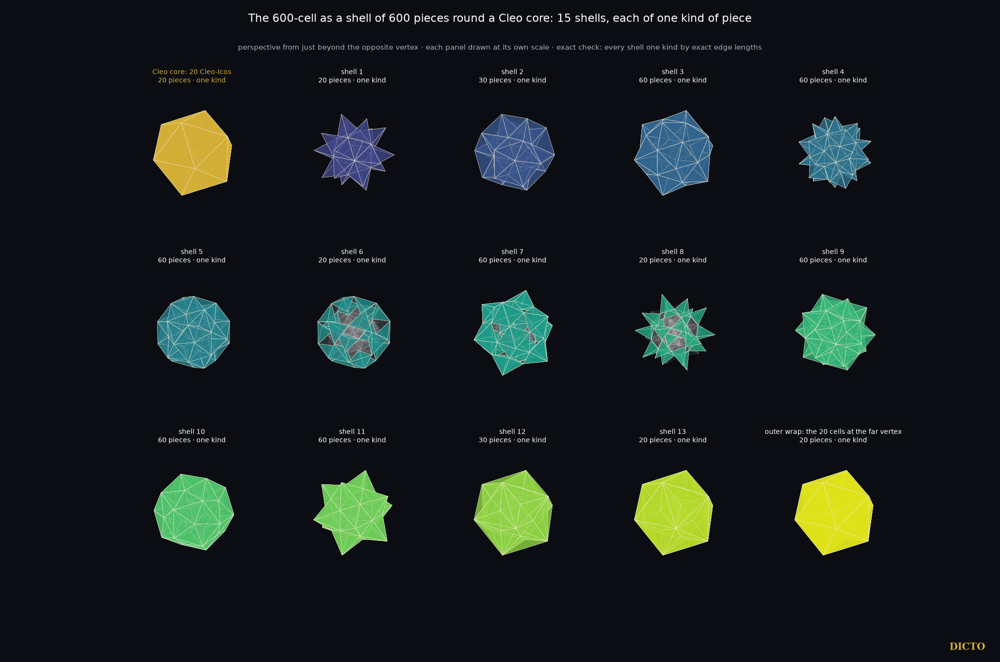
The Cleo shells. Grouped by the height of their centres along one vertex, the 600 cells form 15 shells of 20, 20, 30, 60, 60, 60, 20, 60, 20, 60, 60, 60, 30, 20 and 20 cells. DICTO noticed that this list reads the same backwards. The angles from the vertex to the shells' cell centres mirror it too: 22.24°, 37.76°, 45°, 55.11°, 69.30°, 77.38°, 82.24°, 90°, then 97.76° and on to 157.76°, and each shell's angle and its mirror shell's angle add up to exactly 180°. Both follow from the 600-cell's symmetry through its centre, which carries shell k to shell 14 − k and the vertex to the opposite vertex. Seen in perspective from just beyond the opposite vertex (eye at height −21/10 when the vertex is at 2), the cells of each shell are all of one kind: they have the same six edge lengths, checked exactly. The core is the innermost shell, the 20 cells round the vertex. In this view their common corner is the centre, and their twelve other corners, the vertex's twelve neighbours, form a regular icosahedron about it (§4); so each core cell is the central pyramid of a regular icosahedron, the piece DICTO named the Cleo-Icos (#19). Mosseri and Sadoc flatten the 600-cell into ordinary space to describe icosahedral order in materials (§8); the icosahedron of 20 Cleo-Icos is the 600-cell's vertex cluster brought flat. In DICTO's words, the Cleo-Icos is the 600-cell's original tetrahedron as it must look in flat space: twenty of them fill the regular icosahedron exactly. The shells also explain the vertex-first shadow: its front layer is exactly the core and the next six shells (270 cells), its side-on cells are the middle shell (60), and its back layer is the other seven shells.
DICTO's radial cell projection. In the Polyhedraverse app, DICTO's radial cell projection (RCP) builds the 600-cell cell by cell, each new cell folded across a face of one already placed. It is his rediscovery of the classical reflection construction (Coxeter). The fold between neighbouring cells is the angle with cosine (1 + 3√5)/8, 15.52°: the same angle as the moment on the vertex–cell turning above. Counted in steps from one cell to a face-to-face neighbour, the 600 cells fall into 16 shells of 1, 4, 12, 24, 36, 52, 68, 76, 78, 72, 64, 56, 40, 12, 4 and 1 cells, checked here on the exact model (schlegel_shells.py). The 600-cell thus unfolds in three ways from one exact model: in DICTO's 16 steps from a cell, in 31 layers of height from a cell, and in the 15 Cleo shells round a vertex.
“Why, sometimes I've believed as many as six impossible things before breakfast.” — the White Queen, Through the Looking-Glass, ch. 5
Six of the all-triangle slices are large, with 28 to 72 vertices, and match none of the eight convex deltahedra: the slices with 72 (vertex-first), 32 (edge-first), 30 (face-first), and 48, 42 and 28 (cell-first) vertices. #62 tested each for whether its triangles can all be made equal while its full symmetry is kept. For five of them this is impossible. For the 48-vertex slice it is possible in exactly one way, and the result has a name.
“All the King's horses and all the King's men / Couldn't put Humpty Dumpty in his place again.” — Through the Looking-Glass, ch. 6
The real 48-vertex slice, at height 1 + √5/2 in the cell-first direction, is Humpty Dumpty (DICTO's name): a convex, egg-like solid of 92 triangles, with edge lengths in ratios up to (5+√5)/2 ≈ 3.62 (Figure 6.2). Forced to have all 138 edges equal, it becomes Fallen Humpty (placeholder name; Slice-48 in #62): a non-convex solid that folds in and out, with dihedral angles from 81.75° to 243.20°, where the egg was smooth. As DICTO remarked, the rhyme describes the situation exactly: the equal triangles put him together again, but not in his place. What the 600-cell shows is the egg; Fallen Humpty is what our demand for equal triangles makes of it.
“When I use a word,” Humpty Dumpty said in rather a scornful tone, “it means just what I choose it to mean—neither more nor less.” — ch. 6
Alicia Boole Stott (1900; encouraged by P. H. Schoute) studied series of three-dimensional sections of the regular four-dimensional polytopes and made complete sets of models of the sections of the 600-cell and the 120-cell; two sets of 600-cell section models are kept at the University of Groningen, and a further set is at the Faulkes Institute, Cambridge. Coxeter's Regular Polytopes treats the polytopes and the vertex-first sections. We have now read her paper, "On certain series of sections of the regular four-dimensional hypersolids" (Verhandelingen der Koninklijke Akademie van Wetenschappen te Amsterdam, Eerste Sectie, 7, no. 3, 1900, with 5 plates). Her series for the 600-cell is cell-first: she cuts by spaces parallel to one bounding tetrahedron, starting with that tetrahedron and passing through the layers of vertices to the middle, after which "the other sections are now repeated in reverse order"; she finds each section by construction, draws it as a flat plan with its faces coloured by kind of tetrahedron (her diagrams I–VII), builds it as a model, and counts the 600 tetrahedra by colour across the series (her §17). This matches our eight cell-first cuts through layers of corners, from the tip to the centre. Her series has no cuts inside the gaps between layers and no vertex-, edge- or face-first series of the 600-cell, and she does not treat shadows. Her work is the precedent for this atlas, and its cell-first sections at the corner layers are hers. Mosseri and Sadoc flatten the 600-cell into ordinary space to describe icosahedral order in materials (C. R. Physique 15, 2014, doi:10.1016/j.crhy.2013.09.006); that its cells then become Cleo-Icos was noted in the Cleo-Icos reading study of 14 October 2026, made on DICTO's idea. Counts of cells by layer round a vertex of the 600-cell are a natural tabulation and may be known; we did not find them in the sources checked. We did not find in the sources checked: an exact atlas in all four directions including the gaps between vertex heights (Boole Stott's series is the cell-first one through the corner layers), the list of all-triangle slices, or Humpty Dumpty.
The 600-cell has 62 slice patterns between its centre and its tips in its four main directions (the far half mirrors the near half), all computed exactly here; exactly twelve are made only of triangles, and each is identified. With the four shadows this is a complete, proved atlas of the White Queen's solid, every slice shown as it really is. Its shadows resolve into exact halves, and its 600 cells stand in 15 shells round one vertex, each shell of one kind of piece, the innermost a core of 20 Cleo-Icos. Its most graceful slice is Humpty Dumpty, the 48-vertex egg. Forcing equal edges, the aim of #62, succeeds for that one large slice only, and its result, Fallen Humpty, is less graceful than the egg it came from.
Every pattern on the near side, from the centre (height 0) to the tip, in each direction; heights are x·d with d as in §2, exact in ℚ(√5) (√5 written as a factor). A cut through a layer of corners is marked corners, a cut inside the gap between two layers gap (taken at the gap's midpoint; by the lemma every height in the gap gives the same pattern). V, E, F count the corners, edges and faces; faces are given as number × number of sides. The same table, with edge lengths and dihedral angles, is data/atlas600.json in the study attached to this record.
| # | direction | cut | height | V | E | F | faces | all triangles |
|---|---|---|---|---|---|---|---|---|
| 1 | vertex-first | corners | 0 | 42 | 120 | 80 | 80×3 | yes |
| 2 | vertex-first | gap | -1/2+1/2√5 | 132 | 330 | 200 | 140×3, 60×4 | |
| 3 | vertex-first | corners | -1+√5 | 72 | 210 | 140 | 140×3 | yes |
| 4 | vertex-first | gap | 1/2+1/2√5 | 132 | 330 | 200 | 140×3, 60×4 | |
| 5 | vertex-first | corners | 2 | 32 | 90 | 60 | 60×3 | yes |
| 6 | vertex-first | gap | 3/2+1/2√5 | 72 | 180 | 110 | 80×3, 30×4 | |
| 7 | vertex-first | corners | 1+√5 | 12 | 30 | 20 | 20×3 | yes |
| 8 | vertex-first | gap | 5/2+1/2√5 | 12 | 30 | 20 | 20×3 | yes |
| 9 | vertex-first | corners | 4 | tip: a point (the vertex) | ||||
| 10 | edge-first | corners | 0 | 92 | 250 | 160 | 140×3, 20×4 | |
| 11 | edge-first | gap | -1/4+1/4√5 | 142 | 355 | 215 | 150×3, 65×4 | |
| 12 | edge-first | corners | -1/2+1/2√5 | 92 | 255 | 165 | 150×3, 15×4 | |
| 13 | edge-first | gap | 1/4+1/4√5 | 142 | 355 | 215 | 150×3, 65×4 | |
| 14 | edge-first | corners | 1 | 92 | 245 | 155 | 130×3, 25×4 | |
| 15 | edge-first | gap | 3/4+1/4√5 | 122 | 305 | 185 | 130×3, 55×4 | |
| 16 | edge-first | corners | 1/2+1/2√5 | 72 | 200 | 130 | 120×3, 10×4 | |
| 17 | edge-first | gap | 5/4+1/4√5 | 112 | 280 | 170 | 120×3, 50×4 | |
| 18 | edge-first | corners | 2 | 77 | 205 | 130 | 110×3, 20×4 | |
| 19 | edge-first | gap | 1+1/2√5 | 92 | 230 | 140 | 100×3, 40×4 | |
| 20 | edge-first | corners | √5 | 82 | 210 | 130 | 100×3, 30×4 | |
| 21 | edge-first | gap | 3/4+3/4√5 | 92 | 230 | 140 | 100×3, 40×4 | |
| 22 | edge-first | corners | 3/2+1/2√5 | 32 | 90 | 60 | 60×3 | yes |
| 23 | edge-first | gap | 5/4+3/4√5 | 52 | 130 | 80 | 60×3, 20×4 | |
| 24 | edge-first | corners | 1+√5 | 17 | 45 | 30 | 30×3 | yes |
| 25 | edge-first | gap | 7/4+3/4√5 | 22 | 55 | 35 | 30×3, 5×4 | |
| 26 | edge-first | corners | 5/2+1/2√5 | tip: a segment (the edge) | ||||
| 27 | face-first | corners | 0 | 104 | 282 | 180 | 156×3, 24×4 | |
| 28 | face-first | gap | -1/6+1/6√5 | 144 | 360 | 218 | 152×3, 66×4 | |
| 29 | face-first | corners | -1/3+1/3√5 | 114 | 300 | 188 | 152×3, 36×4 | |
| 30 | face-first | gap | 1/6+1/6√5 | 144 | 360 | 218 | 152×3, 66×4 | |
| 31 | face-first | corners | 2/3 | 114 | 300 | 188 | 152×3, 36×4 | |
| 32 | face-first | gap | 1/2+1/6√5 | 138 | 345 | 209 | 146×3, 63×4 | |
| 33 | face-first | corners | 1/3+1/3√5 | 78 | 219 | 143 | 134×3, 9×4 | |
| 34 | face-first | gap | 5/6+1/6√5 | 126 | 315 | 191 | 134×3, 57×4 | |
| 35 | face-first | corners | 4/3 | 105 | 270 | 167 | 128×3, 39×4 | |
| 36 | face-first | gap | 7/6+1/6√5 | 114 | 285 | 173 | 122×3, 51×4 | |
| 37 | face-first | corners | 1+1/3√5 | 84 | 219 | 137 | 110×3, 27×4 | |
| 38 | face-first | gap | 5/6+1/2√5 | 102 | 255 | 155 | 110×3, 45×4 | |
| 39 | face-first | corners | 2/3+2/3√5 | 72 | 192 | 122 | 104×3, 18×4 | |
| 40 | face-first | gap | 7/6+1/2√5 | 96 | 240 | 146 | 104×3, 42×4 | |
| 41 | face-first | corners | 5/3+1/3√5 | 54 | 150 | 98 | 92×3, 6×4 | |
| 42 | face-first | gap | 3/2+1/2√5 | 72 | 180 | 110 | 80×3, 30×4 | |
| 43 | face-first | corners | 4/3+2/3√5 | 30 | 84 | 56 | 56×3 | yes |
| 44 | face-first | gap | 7/6+5/6√5 | 42 | 105 | 65 | 50×3, 15×4 | |
| 45 | face-first | corners | 1+√5 | 26 | 69 | 45 | 42×3, 3×4 | |
| 46 | face-first | gap | 3/2+5/6√5 | 30 | 75 | 47 | 38×3, 9×4 | |
| 47 | face-first | corners | 2+2/3√5 | tip: a triangle | ||||
| 48 | cell-first | corners | 0 | 84 | 240 | 158 | 152×3, 6×4 | |
| 49 | cell-first | gap | 1/4 | 144 | 360 | 218 | 152×3, 66×4 | |
| 50 | cell-first | corners | 1/2 | 124 | 324 | 202 | 160×3, 42×4 | |
| 51 | cell-first | gap | 3/8+1/8√5 | 144 | 360 | 218 | 152×3, 66×4 | |
| 52 | cell-first | corners | 1/4+1/4√5 | 84 | 234 | 152 | 140×3, 12×4 | |
| 53 | cell-first | gap | 1/2+1/4√5 | 132 | 330 | 200 | 140×3, 60×4 | |
| 54 | cell-first | corners | 3/4+1/4√5 | 72 | 198 | 128 | 116×3, 12×4 | |
| 55 | cell-first | gap | 7/8+3/8√5 | 108 | 270 | 164 | 116×3, 48×4 | |
| 56 | cell-first | corners | 1+1/2√5 | 48 | 138 | 92 | 92×3 | yes |
| 57 | cell-first | gap | 5/4+1/2√5 | 84 | 210 | 128 | 92×3, 36×4 | |
| 58 | cell-first | corners | 3/2+1/2√5 | 42 | 120 | 80 | 80×3 | yes |
| 59 | cell-first | gap | 11/8+5/8√5 | 60 | 150 | 92 | 68×3, 24×4 | |
| 60 | cell-first | corners | 5/4+3/4√5 | 28 | 78 | 52 | 52×3 | yes |
| 61 | cell-first | gap | 3/2+3/4√5 | 36 | 90 | 56 | 44×3, 12×4 | |
| 62 | cell-first | corners | 7/4+3/4√5 | 4 | 6 | 4 | 4×3 | yes |
From paper #76, DICTO DOI 10.5281/zenodo.23780068
The five stages from the 600-cell to the 120-cell, built from the White Queen, with their slices and shadows
The White Queen and the Red Queen are polar partners. Between them lies a path of solids, each made by cutting her corners a little deeper.
In ordinary space the icosahedron becomes the dodecahedron in the same way. Cut its twelve corners a third of the way along each edge and it becomes the truncated icosahedron, the football: 12 pentagons and 20 hexagons. Cut to the middle of each edge and it is the icosidodecahedron; cut further and it becomes the truncated dodecahedron, and at last the dodecahedron. DICTO proposed the four-dimensional version: an icosahedron with hexagons, in the fourth dimension. It is the midpoint of the same path one dimension up, from the White Queen to the Red Queen.

Each stage is a set of points chosen on the White Queen's own edges, triangles or cells; nothing else is needed.
We take the White Queen of #63: 120 corners, 720 edges of length e, 1200 triangles, 600 tetrahedra. Her polar partner's corners are the centres of her cells, and two of them are joined when the two cells share a triangle (#65): 1200 Red Queen edges of length f.
| Stage | Corners built from the White Queen | Corners | Edges | Cells |
|---|---|---|---|---|
| White Queen, 600-cell | her corners | 120 | 720 | 600 tetrahedra |
| truncated 600-cell | on each edge, 1/3 of the way from each end | 1440 | 4320 | 120 icosahedra, 600 truncated tetrahedra |
| rectified 600-cell | the middle of each edge | 720 | 3600 | 120 icosahedra, 600 octahedra |
| bitruncated 600-cell | on each triangle, 3/5 of the way from the middle of each of its edges to its centre | 3600 | 7200 | 120 truncated icosahedra, 600 truncated tetrahedra |
| rectified 120-cell | the centre of each triangle | 1200 | 3600 | 120 icosidodecahedra, 600 tetrahedra |
| truncated 120-cell | on each Red Queen edge, (5 − √5)/10 of the way from each end | 2400 | 4800 | 120 truncated dodecahedra, 600 tetrahedra |
| Red Queen, 120-cell | the centres of her cells | 600 | 1200 | 120 dodecahedra |
Table 1. The seven solids. The counts are the classical ones; we checked them on our models, together with the cells (each cell is the set of corners highest along one of the White Queen's 120 corner directions or 600 cell directions).
Proposition 1 (the cuts). With the corners of Table 1, every edge of each stage has one length exactly when the cuts are at 1/3 (truncated 600-cell), 3/5 (bitruncated) and (5 − √5)/10 (truncated 120-cell); the rectified stages need no choice.
Proof. Truncated 600-cell. Its edges are of two kinds: round each White Queen corner, between the points on two of her edges at that corner, length s·e (two edges at a corner meet at 60°); and along each of her edges, between its two points, length (1 − 2s)·e. They are equal exactly when s = 1/3. Bitruncated. In a triangle abc let mab be the middle of ab and g the centre; the corner on ab is q = (1 − l)·mab + l·g. Within the triangle, qab to qac has length (1 − l)·|mab − mac| = (1 − l)·e/2. Between the triangles abc and abd of one tetrahedron, the two corners on ab are l·|gabc − gabd| = l·|c − d|/3 = l·e/3 apart. Equal exactly when (1 − l)/2 = l/3, that is l = 3/5. Truncated 120-cell. Along a Red Queen edge the two corners are (1 − 2t)·f apart; round a Red Queen corner P, the corners on the edges PQ and PR are t·|Q − R| apart, and Q and R, two neighbours of P on one pentagon, are a pentagon diagonal φ·f apart. Equal exactly when t·φ = 1 − 2t, that is t = 1/(φ + 2) = (5 − √5)/10. Rectified stages. Middles of edges, and centres of triangles, are joined only to their nearest neighbours, all at one distance (e/2 and e/3). ∎
The cuts were also found numerically, independently, by asking that every corner's nearest neighbours be equally far; the values agree to 10−14 (study cuts.py). In the app the stages are built the same way, from the White Queen's model, and checked: corners and edges as in Table 1, all corners on one sphere, all edges of one length.
A four-dimensional solid can be seen by its shadows and by its slices. We give both, for every stage, in the four directions the queens were mapped in.
The four main directions are those of #63: along a White Queen corner (vertex first), the middle of an edge (edge first), the centre of a triangle (face first) and the centre of a cell (cell first). In each, the slices are cut at every height where a corner lies and halfway between neighbouring heights, from the centre to the tip; between two neighbouring heights the slice keeps one pattern (#63, Lemma), so this list is complete. All seven solids have a centre of symmetry, so the other half repeats this one.
Theorem. (1) In the four main directions the five stages have the numbers of slices, the numbers of different slice patterns and the shadows of Table 2: 288, 138, 478, 180 and 318 slices from the centre to the tips, 1402 in all. (2) At the two ends the same count gives the exact atlases: the White Queen's 62 slices and 4 shadows (#63) and the Red Queen's 124 slices and 4 shadows (#65). (3) In every direction the shadows of the truncated and the rectified 600-cell have the same number of faces (110, 232, 272, 194), and so do the shadows of the rectified and the truncated 120-cell (102, 252, 296, 242).
| Solid | Slices v · e · f · c | All | Patterns v · e · f · c | Shadows, corners/faces: v · e · f · c |
|---|---|---|---|---|
| White Queen | 9 · 17 · 21 · 15 | 62 | 7 · 15 · 19 · 14 | 42/80 · 52/80 · 56/96 · 44/78 |
| truncated 600-cell | 29 · 85 · 103 · 71 | 288 | 21 · 77 · 98 · 62 | 192/110 · 280/232 · 312/272 · 240/194 |
| rectified 600-cell | 17 · 39 · 49 · 33 | 138 | 16 · 35 · 49 · 33 | 132/110 · 150/232 · 168/272 · 144/194 |
| bitruncated | 43 · 135 · 175 · 125 | 478 | 23 · 110 · 151 · 97 | 240/122 · 580/312 · 636/368 · 504/266 |
| rectified 120-cell | 21 · 49 · 65 · 45 | 180 | 14 · 46 · 60 · 41 | 140/102 · 260/252 · 282/296 · 240/242 |
| truncated 120-cell | 33 · 87 · 117 · 81 | 318 | 12 · 69 · 96 · 62 | 200/102 · 500/252 · 564/296 · 480/242 |
| Red Queen | 15 · 33 · 45 · 31 | 124 | 8 · 29 · 40 · 24 | 80/42 · 160/92 · 180/104 · 158/84 |
Table 2. The atlas. v, e, f, c: the White Queen's vertex-first, edge-first, face-first and cell-first directions (for the Red Queen these are her cell, pentagon, edge and corner directions, in that order). A pattern is a slice's corners, edges, faces and faces by sides; two slices of one direction with the same counts are one pattern. Every three-dimensional slice and every shadow satisfies Euler's formula V − E + F = 2.
Proof and checks. Each slice is the convex hull of the solid's corners at that height and the points where its edges cross it, found in the three-dimensional space of the cut; faces are the coplanar parts of the hull, each counted by its true corners. The computation is in double precision with a tolerance of 10−9; it is checked at both ends against the exact atlases in ℚ(√5) of #63 and #65 (the numbers of slices in all four directions, 62 and 124, and the corners and faces of all 8 shadows agree), and by Euler's formula on every three-dimensional slice and every shadow. The shadows were computed a second time by the app's own hull code: the two agree on all 23 shadows the study gives; in the cell-first direction the study's merging of coplanar faces failed Euler's check for the five stages, and those five shadows are the app's, each checked by Euler's formula. Part (3) is read off the table. ∎
All triangles. The White Queen has twelve slices made only of triangles (#63; here 5, 2, 1 and 4 in the four directions). Of the stages, only the truncated 600-cell (3, vertex first), the rectified 600-cell (1 vertex first, 1 cell first), the rectified 120-cell (1, cell first) and the truncated 120-cell (3, cell first) have any; the bitruncated midpoint has none. The last slice at the tip is a single corner, an edge, a polygon or a whole cell, depending on the solid and the direction (study data).
Halfway from White to Red the solid is its own partner: cut from either queen, the same shape appears.
The bitruncated 600-cell is also the bitruncated 120-cell: cutting the Red Queen's corners as deeply from her side reaches the same solid, which is why it stands at the middle of the path. Its 120 truncated icosahedra are the footballs of DICTO's proposal; its 600 truncated tetrahedra fill the places of the White Queen's cells. Its shadows are the richest in Table 2, up to 636 corners; its slices number 478, a third of all the slices of the five stages.
Kaleidohedra and Rhombiverse, the White Queen world, Shadow view: the slider "From White to Red" runs from the White Queen through the five stages to the Red Queen, in all four directions and the turnings between them; the caption gives each stage's corners and cells and its shadow's corners and faces. The link https://kaleidohedra.dictospheres.com/?open=whitequeen:t12 opens the midpoint.
DICTO's idea: the four-dimensional icosahedron with hexagons, and the stages between the queens; the names White Queen and Red Queen are his. Computation, proofs and drafting with Claude (Anthropic). Licence CC BY-SA 4.0.
From paper #65, DICTO DOI 10.5281/zenodo.23716140
Aristotle's five pyramids as the cores of the regular four-dimensional solids
In #63, the White Queen 600-cell, 600 regular tetrahedra stand round 120 corners, and round one corner they fall into fifteen shells whose core is twenty Cleo-Icos filling a regular icosahedron (#19, #44). DICTO proposed her polar swap: every corner of one solid becomes a cell of the other. The polar of the 600-cell is the 120-cell, 120 regular dodecahedra round 600 corners. DICTO named it the Red Queen, after the other queen of Through the Looking-Glass. He then proposed that the dodecahedral pyramid, the one of Aristotle's five pyramids the White Queen lacks, sits at the Red Queen's core, and that all five pyramids are four-dimensional shadows. They are.
We build the 120-cell from the exact model of #63, in ℚ(√5). Its corners are the centres of the White Queen's 600 cells; two corners are joined when their cells share a triangle (1200 edges); the five cells round each White Queen edge give a pentagon (720 pentagons); the twenty cells round each White Queen corner give a cell (120 cells). Checked exactly: all corners on one sphere, all edges equal, four edges at every corner, every pentagon regular and shared by exactly two cells, every cell a regular dodecahedron (13 of 13 checks).

Layers and core. Round one dodecahedron the 120 cells stand in nine layers of 1, 12, 20, 12, 30, 12, 20, 12 and 1, each one kind of piece in the perspective view, and the 600 corners in fifteen layers of 20, 20, 30, 60, 60, 60, 20, 60, 20, 60, 60, 60, 30, 20 and 20: exactly the Cleo shells of the White Queen, since her cell centres are the Red Queen's corners. Both lists are palindromes, the same forwards and backwards, as the White Queen's shells are (#63): the Red Queen is centrally symmetric, so the layers counted from one cell match, in reverse, the layers counted from the opposite cell. The two cores exchange one for one: each of the White Queen's twenty Cleo-Icos becomes one of the twenty corners of the Red Queen's central dodecahedron, and each of the twelve corners of the White Queen's icosahedron becomes one of its twelve pentagons. The White Queen's twenty Cleo-Icos are real cells, the shadows of the twenty tetrahedra at her corner. The Red Queen's core is one whole cell; its twelve pentagonal pyramids, Aristotle's dodecahedron pyramid, appear when she is divided from her centre into 120 four-dimensional pyramids, one over each cell: the twelve sides of the central one cast them exactly (§3). In the star Red Queen (§5) they are parts of real cells again.
How it closes. Three regular dodecahedra round an edge fill 3 × 116.57° = 349.7° and leave a gap of 10.3°, so dodecahedra cannot close round an edge in ordinary space; five regular tetrahedra leave 7.36°. As three pentagons round a corner close only by folding up into the dodecahedron, these gaps close by bending into the fourth dimension, and the Red Queen closes with three dodecahedra round every edge. In the perspective view the pieces close with no gaps and no overlaps, slightly bent, and the last dodecahedron becomes the outside, as the last pentagon of a flattened dodecahedron becomes its outer rim.
Theorem. In perspective from just beyond the far side, along a corner or along a cell centre:
(1) Corner cores. The cells at one corner of the 5-cell, the 16-cell and the 600-cell cast the face pyramids of the regular tetrahedron (4), octahedron (8) and icosahedron (20, the Cleo-Icos), apex at the centre.
(2) Cell cores. The sides of the four-dimensional pyramid from the solid's centre over one cell cast the face pyramids of that cell: tetrahedron (5-cell, 16-cell, 600-cell), cube (tesseract, 6), octahedron (24-cell, 8) and dodecahedron (120-cell, 12).
(3) Exact proportions. In every case the shadow is exactly Aristotle's face pyramid of that Platonic solid: its side edge² over its base edge² is 3/8, 1/2, 3/4, (5 + √5)/8 and (9 + 3√5)/8 for the tetrahedron, octahedron, cube, icosahedron and dodecahedron.
(4) Polar pairs. 16-cell (8 octahedron pyramids) ↔ tesseract (6 cube pyramids); 600-cell (20 Cleo-Icos) ↔ 120-cell (12 pentagonal pyramids); the 5-cell and the 24-cell are their own polars.

Proof. The six solids are built exactly (the 5-cell in the hyperplane of five coordinates summing to zero; the 16-cell, tesseract and 24-cell from their standard coordinates; the 600-cell and 120-cell as in §2). For each we take the eye on the axis just beyond the far side and project. On the axis the corner, or the cell centre and the solid's centre, fall on the centre of the picture, so every piece through it becomes a pyramid with its apex there; we check exactly that the far ends of these pieces form a regular solid centred on the picture's centre, count its faces, and compare side edge² over base edge² with Aristotle's pyramid. All ten cases agree exactly (10 of 10).
DICTO pointed out that the pyramids in four dimensions may have different proportions from their shadows. They do. The corner cores are regular tetrahedra in four dimensions, side edge equal to base edge, but their shadows are the flatter face pyramids. The sides of a cell core run from the solid's centre to its corners, so in four dimensions their side edge² over base edge² is the solid's radius² over edge²: 2/5 (5-cell), 1/2 (16-cell), 1 (tesseract and 24-cell), (3 + √5)/2 (600-cell) and 7 + 3√5 (120-cell), while their shadows are again Aristotle's. The four-dimensional solids carry tall pieces; their shadows, in our space, are Aristotle's five pyramids.
No convex regular four-dimensional solid has dodecahedra round a corner: that would be {3,5,3}, which never closes and is the infinite icosahedral honeycomb of hyperbolic space. The star polytope {5/2,5,3}, the small stellated 120-cell of Hess, does. It stands on the White Queen's 120 corners, with 1200 edges joining corners one radius apart, 720 pentagrams and 120 small stellated dodecahedra, and round every corner a regular dodecahedron of twelve cells. Each of these twelve cells meets the corner with one spike, a pentagonal pyramid whose side edge is exactly φ times its base edge. In perspective the twelve spikes cast exactly the dodecahedron cut into Aristotle's twelve pentagonal pyramids (checked exactly, side edge² over base edge² = (9 + 3√5)/8). So the dodecahedral pyramids that no convex solid can hold at a corner sit at the corner of the star Red Queen: golden in four dimensions, Aristotle's in their shadow.
As for the White Queen in #63, we cut the Red Queen in her four main directions, through a corner, an edge, a pentagon and a cell, from the centre to the tip, at every corner height and once inside every gap, exactly in ℚ(√5). The one-pattern-per-gap lemma of #63 holds here too (cuts at ¼, ½ and ¾ of every gap cross the same edges), so this list is complete. Her corners are the centres of the White Queen's cells in the coordinates of #63 (corner radius² 7/4 + 3√5/4, edge 1/2). The four directions d are the average of the corners of one element: corner-first d = ((7+3√5)/8, (3+√5)/8, 0, 1/4), a corner; edge-first d = ((7+3√5)/8, (3+√5)/8, 0, 0), the midpoint of an edge; pentagon-first d = ((7+3√5)/8, (5+2√5)/20, (5+3√5)/40, 0), the centre of a pentagon; cell-first d = ((7+3√5)/8, 0, 0, 0), the centre of a cell. They are exactly parallel to the White Queen's cell-, triangle-, edge- and vertex-first directions. Every slice is checked exactly as in #63: repeated points merged by exact comparison, every face plane tested to support the slice by an exact sign in ℚ(√5), every face ordered by an exact two-dimensional hull and turned outward, every edge in exactly two faces, and V − E + F = 2. The atlas adds 17 checks of its own, all passed: among them that each gap gives the same faces when cut at ¼, ½ and ¾ of its height, that inside a gap each slice face is the cross-section of exactly one dodecahedron, that every cut point is a corner of its slice, that each shadow is tiled exactly once by its front cells and once by its back cells (exact volume), and that the polar pairings with the White Queen hold.
Atlas. The Red Queen has 124 slice patterns: 31 corner-first (faces of 3 to 8 sides, largest 108 vertices), 45 edge-first (3 to 9, the only nine-sided faces, largest 114), 33 pentagon-first (3 to 8 and 10, largest 120 vertices and 62 faces) and 15 cell-first (faces of 3, 4, 5, 6, 8 and 10 sides, largest 120 vertices).
Cell-first she passes through the Archimedean solids of the icosahedral family, each exact: the rhombicosidodecahedron, the truncated icosahedron and the truncated dodecahedron (each at one height inside its gap), the icosidodecahedron, and regular dodecahedra (edge φ times the cell's) up to the tip, where the slice is the cell itself; these dodecahedra are her only all-pentagon slices. The other directions begin with a regular tetrahedron (corner-first), a regular triangular prism (edge-first) and a regular pentagonal prism (pentagon-first), and regular decagons appear in the pentagon-first middle slice and in one cell-first gap.
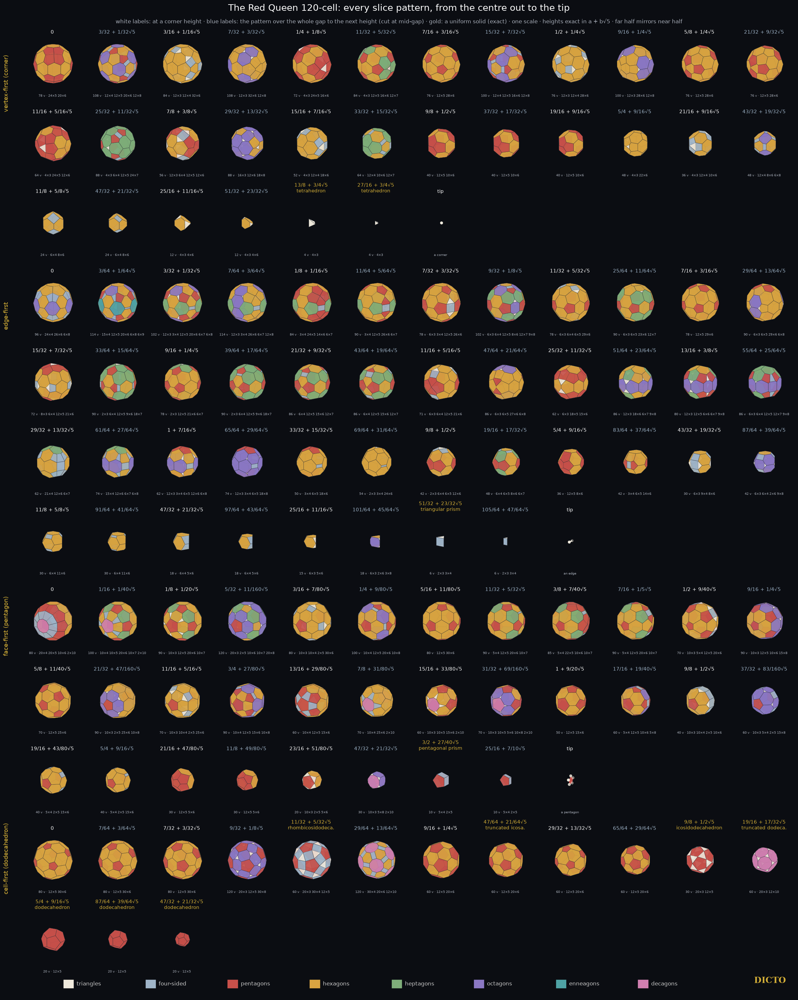
Shadows. Her four shadows are
| Direction | Vertices · edges · faces | Faces | Front · back · side-on cells |
|---|---|---|---|
| corner-first | 158 · 240 · 84 | 72 pentagons, 12 decagons | 54 · 54 · 12 |
| edge-first | 180 · 282 · 104 | 96 pentagons, 6 decagons, 2 twelve-sided | 56 · 56 · 8 |
| pentagon-first | 160 · 250 · 92 | 80 pentagons, 10 octagons, 2 regular decagons | 54 · 54 · 12 |
| cell-first | 80 · 120 · 42 | 12 pentagons, 30 hexagons | 45 · 45 · 30 |
Every face that is not a pentagon is a side-on cell seen flat. As in the White Queen, each shadow resolves into two exact halves: the front cells fill it exactly once and so do the back cells (exact volume). And the two queens' atlases mirror each other by polarity: each of the Red Queen's shadows is the polar of the White Queen's middle slice in the same direction, and each of her middle slices is the polar of the White Queen's shadow.
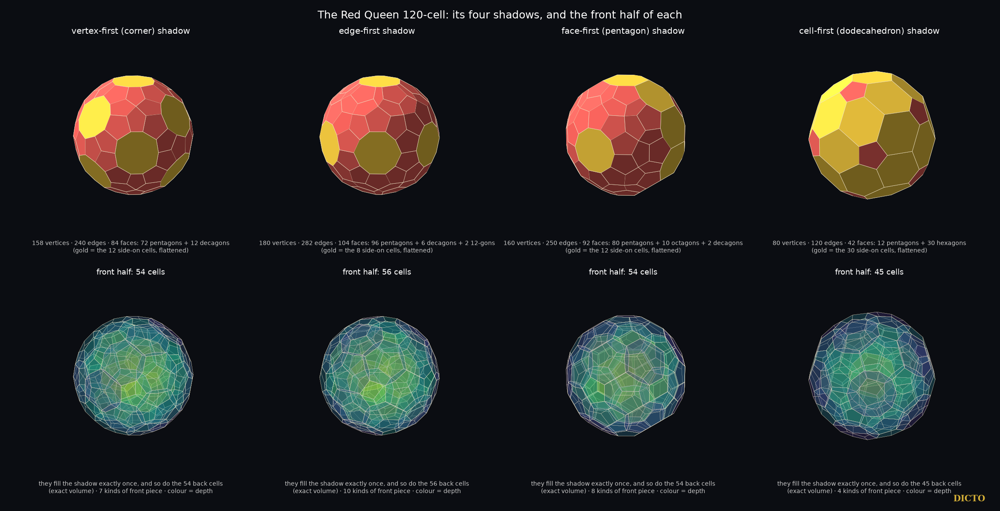
The 120-cell and 600-cell are Schläfli's (about 1852, published 1901); their coordinates, polarity and the star polytopes {5/2,5,3} and the others are in Coxeter's Regular Polytopes, the star polytopes first found by Schläfli and Hess (1883). Alicia Boole Stott, in "On certain series of sections of the regular four-dimensional hypersolids" (Verhandelingen der Koninklijke Akademie van Wetenschappen te Amsterdam, Eerste Sectie, 7, no. 3, 1900), cut the 120-cell cell-first, parallel to one bounding dodecahedron, through the layers of corners to the middle, and drew each section as a flat plan with coloured faces (her diagrams VIII–XIV); we read her paper for this version. Her series matches our eight cell-first cuts through corner layers, from the cell to the centre, among them the rhombicosidodecahedron and the icosidodecahedron, which are hers. The truncated icosahedron and the truncated dodecahedron lie inside gaps between corner layers, which her series does not cut, and she has no corner-, edge- or pentagon-first series and no shadows. The layers 1, 12, 20, 12, 30, … of the 120-cell's cells round one cell are known, for example in Schleimer and Segerman's Puzzling the 120-cell. Aristotle's claim and the long dispute over how many pyramids meet round a point are traced by Lagarias and Zong (2012); the face pyramids of the Platonic solids and which of them fill space are #44, Aristotle's Pyramid, and the Cleo-Icos is #19. We found no earlier statement that Aristotle's five pyramids are exactly the perspective cores of the regular four-dimensional solids, nor of the star core of {5/2,5,3}.
Aristotle's five pyramids are the shadows of the four-dimensional regular solids' cores: three as the cells round a corner, three as the sides of the pyramid over a cell, each with exactly Aristotle's proportions, paired by polarity. The Red Queen, built from the White Queen, holds the dodecahedral one at her core, and the star Red Queen holds it at every corner, golden in four dimensions. Her atlas of 124 slices and four shadows mirrors the White Queen's by polarity, shadow for middle slice.
Every pattern from the centre (height 0) to the tip, in each direction; heights are x·d with d as in §6, exact in ℚ(√5) (√5 written as a factor). corners marks a cut through a layer of corners, gap a cut inside the gap between two layers (by the one-pattern-per-gap lemma every height in the gap gives the same pattern). V, E, F count corners, edges and faces; faces are given as number × number of sides; the last column names the uniform solids. The same table, with edge lengths and dihedral angles, is data/atlas120.json in the study attached to this record.
| # | direction | cut | height | V | E | F | faces | uniform solid |
|---|---|---|---|---|---|---|---|---|
| 1 | corner-first | corners | 0 | 78 | 120 | 44 | 24×5, 20×6 | |
| 2 | corner-first | gap | 3/32+1/32√5 | 108 | 162 | 56 | 12×4, 12×5, 20×6, 12×8 | |
| 3 | corner-first | corners | 3/16+1/16√5 | 84 | 138 | 56 | 12×3, 12×4, 32×6 | |
| 4 | corner-first | gap | 7/32+3/32√5 | 108 | 162 | 56 | 12×3, 32×6, 12×8 | |
| 5 | corner-first | corners | 1/4+1/8√5 | 72 | 114 | 44 | 4×3, 24×5, 16×6 | |
| 6 | corner-first | gap | 11/32+5/32√5 | 84 | 126 | 44 | 4×3, 12×5, 16×6, 12×7 | |
| 7 | corner-first | corners | 7/16+3/16√5 | 76 | 114 | 40 | 12×5, 28×6 | |
| 8 | corner-first | gap | 15/32+7/32√5 | 100 | 150 | 52 | 12×4, 12×5, 16×6, 12×8 | |
| 9 | corner-first | corners | 1/2+1/4√5 | 76 | 126 | 52 | 12×3, 12×4, 28×6 | |
| 10 | corner-first | gap | 9/16+1/4√5 | 100 | 150 | 52 | 12×3, 28×6, 12×8 | |
| 11 | corner-first | corners | 5/8+1/4√5 | 76 | 114 | 40 | 12×5, 28×6 | |
| 12 | corner-first | gap | 21/32+9/32√5 | 76 | 114 | 40 | 12×5, 28×6 | |
| 13 | corner-first | corners | 11/16+5/16√5 | 64 | 102 | 40 | 4×3, 24×5, 12×6 | |
| 14 | corner-first | gap | 25/32+11/32√5 | 88 | 132 | 46 | 4×3, 6×4, 12×5, 24×7 | |
| 15 | corner-first | corners | 7/8+3/8√5 | 56 | 96 | 42 | 12×3, 6×4, 12×5, 12×6 | |
| 16 | corner-first | gap | 29/32+13/32√5 | 88 | 132 | 46 | 16×3, 12×6, 18×8 | |
| 17 | corner-first | corners | 15/16+7/16√5 | 52 | 84 | 34 | 4×3, 12×4, 18×6 | |
| 18 | corner-first | gap | 33/32+15/32√5 | 64 | 96 | 34 | 12×4, 10×6, 12×7 | |
| 19 | corner-first | corners | 9/8+1/2√5 | 40 | 60 | 22 | 12×5, 10×6 | |
| 20 | corner-first | gap | 37/32+17/32√5 | 40 | 60 | 22 | 12×5, 10×6 | |
| 21 | corner-first | corners | 19/16+9/16√5 | 40 | 60 | 22 | 12×5, 10×6 | |
| 22 | corner-first | gap | 5/4+9/16√5 | 48 | 72 | 26 | 4×3, 22×6 | |
| 23 | corner-first | corners | 21/16+9/16√5 | 36 | 60 | 26 | 4×3, 12×4, 10×6 | |
| 24 | corner-first | gap | 43/32+19/32√5 | 48 | 72 | 26 | 12×4, 8×6, 6×8 | |
| 25 | corner-first | corners | 11/8+5/8√5 | 24 | 36 | 14 | 6×4, 8×6 | |
| 26 | corner-first | gap | 47/32+21/32√5 | 24 | 36 | 14 | 6×4, 8×6 | |
| 27 | corner-first | corners | 25/16+11/16√5 | 12 | 18 | 8 | 4×3, 4×6 | |
| 28 | corner-first | gap | 51/32+23/32√5 | 12 | 18 | 8 | 4×3, 4×6 | |
| 29 | corner-first | corners | 13/8+3/4√5 | 4 | 6 | 4 | 4×3 | regular tetrahedron |
| 30 | corner-first | gap | 27/16+3/4√5 | 4 | 6 | 4 | 4×3 | regular tetrahedron |
| 31 | corner-first | corners | 7/4+3/4√5 | tip: a corner | ||||
| 32 | edge-first | corners | 0 | 96 | 150 | 56 | 24×4, 26×6, 6×8 | |
| 33 | edge-first | gap | 3/64+1/64√5 | 114 | 171 | 59 | 15×4, 12×5, 20×6, 6×8, 6×9 | |
| 34 | edge-first | corners | 3/32+1/32√5 | 102 | 159 | 59 | 12×3, 3×4, 12×5, 20×6, 6×7, 6×8 | |
| 35 | edge-first | gap | 7/64+3/64√5 | 114 | 171 | 59 | 12×3, 3×4, 26×6, 6×7, 12×8 | |
| 36 | edge-first | corners | 1/8+1/16√5 | 84 | 129 | 47 | 3×4, 24×5, 14×6, 6×7 | |
| 37 | edge-first | gap | 11/64+5/64√5 | 90 | 135 | 47 | 3×4, 12×5, 26×6, 6×7 | |
| 38 | edge-first | corners | 7/32+3/32√5 | 78 | 123 | 47 | 6×3, 3×4, 12×5, 26×6 | |
| 39 | edge-first | gap | 9/32+1/8√5 | 102 | 153 | 53 | 6×3, 6×4, 12×5, 8×6, 12×7, 9×8 | |
| 40 | edge-first | corners | 11/32+5/32√5 | 78 | 123 | 47 | 6×3, 6×4, 6×5, 29×6 | |
| 41 | edge-first | gap | 25/64+11/64√5 | 90 | 135 | 47 | 6×3, 6×5, 23×6, 12×7 | |
| 42 | edge-first | corners | 7/16+3/16√5 | 78 | 117 | 41 | 12×5, 29×6 | |
| 43 | edge-first | gap | 29/64+13/64√5 | 90 | 135 | 47 | 6×3, 6×5, 29×6, 6×8 | |
| 44 | edge-first | corners | 15/32+7/32√5 | 72 | 117 | 47 | 8×3, 6×4, 12×5, 21×6 | |
| 45 | edge-first | gap | 33/64+15/64√5 | 90 | 135 | 47 | 2×3, 6×4, 12×5, 9×6, 18×7 | |
| 46 | edge-first | corners | 9/16+1/4√5 | 78 | 117 | 41 | 2×3, 12×5, 21×6, 6×7 | |
| 47 | edge-first | gap | 39/64+17/64√5 | 90 | 135 | 47 | 2×3, 6×4, 12×5, 9×6, 18×7 | |
| 48 | edge-first | corners | 21/32+9/32√5 | 86 | 129 | 45 | 6×4, 12×5, 15×6, 12×7 | |
| 49 | edge-first | gap | 43/64+19/64√5 | 86 | 129 | 45 | 6×4, 12×5, 15×6, 12×7 | |
| 50 | edge-first | corners | 11/16+5/16√5 | 71 | 114 | 45 | 6×3, 6×4, 12×5, 21×6 | |
| 51 | edge-first | gap | 47/64+21/64√5 | 86 | 129 | 45 | 6×3, 6×5, 27×6, 6×8 | |
| 52 | edge-first | corners | 25/32+11/32√5 | 62 | 99 | 39 | 6×3, 18×5, 15×6 | |
| 53 | edge-first | gap | 51/64+23/64√5 | 86 | 129 | 45 | 12×3, 18×6, 6×7, 9×8 | |
| 54 | edge-first | corners | 13/16+3/8√5 | 80 | 123 | 45 | 12×3, 12×5, 6×6, 6×7, 9×8 | |
| 55 | edge-first | gap | 55/64+25/64√5 | 86 | 129 | 45 | 6×3, 6×4, 12×5, 12×7, 9×8 | |
| 56 | edge-first | corners | 29/32+13/32√5 | 62 | 99 | 39 | 21×4, 12×6, 6×7 | |
| 57 | edge-first | gap | 61/64+27/64√5 | 74 | 111 | 39 | 15×4, 12×6, 6×7, 6×8 | |
| 58 | edge-first | corners | 1+7/16√5 | 62 | 99 | 39 | 12×3, 3×4, 6×5, 12×6, 6×8 | |
| 59 | edge-first | gap | 65/64+29/64√5 | 74 | 111 | 39 | 12×3, 3×4, 6×5, 18×8 | |
| 60 | edge-first | corners | 33/32+15/32√5 | 50 | 75 | 27 | 3×4, 6×5, 18×6 | |
| 61 | edge-first | gap | 69/64+31/64√5 | 54 | 81 | 29 | 2×3, 3×4, 24×6 | |
| 62 | edge-first | corners | 9/8+1/2√5 | 42 | 66 | 26 | 2×3, 6×4, 6×5, 12×6 | |
| 63 | edge-first | gap | 19/16+17/32√5 | 48 | 72 | 26 | 6×4, 6×5, 8×6, 6×7 | |
| 64 | edge-first | corners | 5/4+9/16√5 | 36 | 54 | 20 | 12×5, 8×6 | |
| 65 | edge-first | gap | 83/64+37/64√5 | 42 | 63 | 23 | 3×4, 6×5, 14×6 | |
| 66 | edge-first | corners | 43/32+19/32√5 | 30 | 51 | 23 | 6×3, 9×4, 8×6 | |
| 67 | edge-first | gap | 87/64+39/64√5 | 42 | 63 | 23 | 6×3, 6×4, 2×6, 9×8 | |
| 68 | edge-first | corners | 11/8+5/8√5 | 30 | 45 | 17 | 6×4, 11×6 | |
| 69 | edge-first | gap | 91/64+41/64√5 | 30 | 45 | 17 | 6×4, 11×6 | |
| 70 | edge-first | corners | 47/32+21/32√5 | 18 | 27 | 11 | 6×4, 5×6 | |
| 71 | edge-first | gap | 97/64+43/64√5 | 18 | 27 | 11 | 6×4, 5×6 | |
| 72 | edge-first | corners | 25/16+11/16√5 | 15 | 24 | 11 | 6×3, 5×6 | |
| 73 | edge-first | gap | 101/64+45/64√5 | 18 | 27 | 11 | 6×3, 2×6, 3×8 | |
| 74 | edge-first | corners | 51/32+23/32√5 | 6 | 9 | 5 | 2×3, 3×4 | regular triangular prism |
| 75 | edge-first | gap | 105/64+47/64√5 | 6 | 9 | 5 | 2×3, 3×4 | |
| 76 | edge-first | corners | 27/16+3/4√5 | tip: an edge | ||||
| 77 | pentagon-first | corners | 0 | 80 | 130 | 52 | 20×4, 20×5, 10×6, 2×10 | |
| 78 | pentagon-first | gap | 1/16+1/40√5 | 100 | 150 | 52 | 10×4, 10×5, 20×6, 10×7, 2×10 | |
| 79 | pentagon-first | corners | 1/8+1/20√5 | 90 | 140 | 52 | 10×3, 12×5, 20×6, 10×7 | |
| 80 | pentagon-first | gap | 5/32+11/160√5 | 120 | 180 | 62 | 20×3, 2×5, 10×6, 10×7, 20×8 | |
| 81 | pentagon-first | corners | 3/16+7/80√5 | 80 | 130 | 52 | 10×3, 10×4, 2×5, 30×6 | |
| 82 | pentagon-first | gap | 1/4+9/80√5 | 100 | 150 | 52 | 10×4, 12×5, 20×6, 10×8 | |
| 83 | pentagon-first | corners | 5/16+11/80√5 | 80 | 120 | 42 | 12×5, 30×6 | |
| 84 | pentagon-first | gap | 11/32+5/32√5 | 90 | 135 | 47 | 5×4, 12×5, 20×6, 10×7 | |
| 85 | pentagon-first | corners | 3/8+7/40√5 | 85 | 130 | 47 | 5×4, 22×5, 10×6, 10×7 | |
| 86 | pentagon-first | gap | 7/16+1/5√5 | 90 | 135 | 47 | 5×4, 12×5, 20×6, 10×7 | |
| 87 | pentagon-first | corners | 1/2+9/40√5 | 70 | 115 | 47 | 10×3, 5×4, 12×5, 20×6 | |
| 88 | pentagon-first | gap | 9/16+1/4√5 | 90 | 135 | 47 | 10×3, 12×5, 10×6, 15×8 | |
| 89 | pentagon-first | corners | 5/8+11/40√5 | 70 | 105 | 37 | 12×5, 25×6 | |
| 90 | pentagon-first | gap | 21/32+47/160√5 | 90 | 135 | 47 | 10×3, 2×5, 25×6, 10×8 | |
| 91 | pentagon-first | corners | 11/16+5/16√5 | 70 | 115 | 47 | 10×3, 10×4, 2×5, 25×6 | |
| 92 | pentagon-first | gap | 3/4+27/80√5 | 90 | 135 | 47 | 10×4, 12×5, 15×6, 10×8 | |
| 93 | pentagon-first | corners | 13/16+29/80√5 | 60 | 95 | 37 | 10×4, 12×5, 15×6 | |
| 94 | pentagon-first | gap | 7/8+31/80√5 | 70 | 105 | 37 | 10×4, 25×6, 2×10 | |
| 95 | pentagon-first | corners | 15/16+33/80√5 | 60 | 95 | 37 | 10×3, 10×5, 15×6, 2×10 | |
| 96 | pentagon-first | gap | 31/32+69/160√5 | 70 | 105 | 37 | 10×3, 10×5, 5×6, 10×8, 2×10 | |
| 97 | pentagon-first | corners | 1+9/20√5 | 50 | 75 | 27 | 12×5, 15×6 | |
| 98 | pentagon-first | gap | 17/16+19/40√5 | 60 | 90 | 32 | 5×4, 12×5, 10×6, 5×8 | |
| 99 | pentagon-first | corners | 9/8+1/2√5 | 40 | 70 | 32 | 10×3, 10×4, 2×5, 10×6 | |
| 100 | pentagon-first | gap | 37/32+83/160√5 | 60 | 90 | 32 | 10×3, 5×4, 2×5, 15×8 | |
| 101 | pentagon-first | corners | 19/16+43/80√5 | 40 | 60 | 22 | 5×4, 2×5, 15×6 | |
| 102 | pentagon-first | gap | 5/4+9/16√5 | 40 | 60 | 22 | 5×4, 2×5, 15×6 | |
| 103 | pentagon-first | corners | 21/16+47/80√5 | 30 | 45 | 17 | 12×5, 5×6 | |
| 104 | pentagon-first | gap | 11/8+49/80√5 | 30 | 45 | 17 | 12×5, 5×6 | |
| 105 | pentagon-first | corners | 23/16+51/80√5 | 20 | 35 | 17 | 10×3, 2×5, 5×6 | |
| 106 | pentagon-first | gap | 47/32+21/32√5 | 30 | 45 | 17 | 10×3, 5×8, 2×10 | |
| 107 | pentagon-first | corners | 3/2+27/40√5 | 10 | 15 | 7 | 5×4, 2×5 | regular pentagonal prism |
| 108 | pentagon-first | gap | 25/16+7/10√5 | 10 | 15 | 7 | 5×4, 2×5 | |
| 109 | pentagon-first | corners | 13/8+29/40√5 | tip: a pentagon | ||||
| 110 | cell-first | corners | 0 | 80 | 120 | 42 | 12×5, 30×6 | |
| 111 | cell-first | gap | 7/64+3/64√5 | 80 | 120 | 42 | 12×5, 30×6 | |
| 112 | cell-first | corners | 7/32+3/32√5 | 80 | 120 | 42 | 12×5, 30×6 | |
| 113 | cell-first | gap | 9/32+1/8√5 | 120 | 180 | 62 | 20×3, 12×5, 30×8 | |
| 114 | cell-first | corners | 11/32+5/32√5 | 60 | 120 | 62 | 20×3, 30×4, 12×5 | rhombicosidodecahedron |
| 115 | cell-first | gap | 29/64+13/64√5 | 120 | 180 | 62 | 30×4, 20×6, 12×10 | |
| 116 | cell-first | corners | 9/16+1/4√5 | 60 | 90 | 32 | 12×5, 20×6 | |
| 117 | cell-first | gap | 47/64+21/64√5 | 60 | 90 | 32 | 12×5, 20×6 | truncated icosahedron |
| 118 | cell-first | corners | 29/32+13/32√5 | 60 | 90 | 32 | 12×5, 20×6 | |
| 119 | cell-first | gap | 65/64+29/64√5 | 60 | 90 | 32 | 12×5, 20×6 | |
| 120 | cell-first | corners | 9/8+1/2√5 | 30 | 60 | 32 | 20×3, 12×5 | icosidodecahedron |
| 121 | cell-first | gap | 19/16+17/32√5 | 60 | 90 | 32 | 20×3, 12×10 | truncated dodecahedron |
| 122 | cell-first | corners | 5/4+9/16√5 | 20 | 30 | 12 | 12×5 | regular dodecahedron |
| 123 | cell-first | gap | 87/64+39/64√5 | 20 | 30 | 12 | 12×5 | regular dodecahedron |
| 124 | cell-first | corners | 47/32+21/32√5 | 20 | 30 | 12 | 12×5 | regular dodecahedron |
The book set out to see two solids of four-dimensional space, completely and exactly, and to find what ties them to the solids of our own space. The lead-up gave the pieces: three small pieces close the gaps between icosahedra (Chapter 1); of Aristotle's five pyramids only the cube's, and the tetrahedron's with the octahedron's, fill space (Chapter 2); face to face the five keep to their own solids, and glued together DICTO's pieces make no new deltahedron in the range searched (Chapter 3); and the face-to-face law holds in general: every face-to-face tiling by the five pyramids is a tiling by whole Platonic solids cut from their centres, so the dodecahedron's pyramid and the Cleo-Icos never take part, and six of DICTO's pieces give only the tetrahedron and a known pentagonal bipyramid (Chapter 4). The shadows then gave the new shapes that gluing could not: variants of the convex deltahedra that join differently, and deltahedra rebuilt with every edge equal (Chapter 5).
The White Queen has been mapped completely: 62 slice patterns in her four main directions, every one exact, twelve made only of triangles; four shadows, each resolving into an exact front half and back half; and her 600 cells in fifteen shells round one corner, the innermost a core of twenty Cleo-Icos, the icosahedron's pyramid (Chapter 6). Alicia Boole Stott's series of 1900 is the first part of this atlas, and its cell-first slices at the corner layers are hers. The Red Queen, built exactly from the White Queen, mirrors her by polarity, shadow for middle slice, and holds the dodecahedron's pyramid at her core; between the two Queens lie five stages, from the truncated 600-cell through the bitruncated midpoint to the truncated 120-cell, built from the White Queen's own corners and mapped in 1402 slices and their shadows (Chapter 7). Aristotle's five pyramids are the cores of the four-dimensional regular solids, each with exactly its proportions, in polar pairs (Chapter 8). The pyramid Aristotle said fills space is, seen from four dimensions, the core of a regular solid.
(1) Which tilings of space by the tetrahedron's and the octahedron's pyramids exist besides the octet cut up and its rearrangements (Chapter 2)? (2) Do gluings of five or more pieces with the regular solids, or seven or more of DICTO's pieces alone, give a new deltahedron, and do icosahedra with Antonius fill space (Chapters 3 and 4)? (3) Which of the new deltahedra of Chapter 5 tile space, alone or with others? (4) The atlases of Chapters 6, 7 and 8 cover the four main directions; the slices in other directions are not mapped.
Each chapter's own list of sources checked, data and code, as published with its paper.
The Lotus seed, the 63-piece build, UNITY, the Chain of Karma, the Stella-Corona and the names AXE, CLEO, FUJI, Hasu, Triskelion, Triskelion Hex, Inner Eye, DESHI and King of Pentacles are DICTO's. AXE and CLEO are the Mosseri–Sadoc tiles t6 and t4 [Mosseri & Sadoc 1982; Kramer 1982; Koca et al. 2020]. The DESHI arrangement is R. W. Gray's [Gray 2002]. Study data, scripts and checks: studies/2026-10-10-icosa-13 and studies/2026-10-14-axe-cleo-fuji at https://github.com/DICTOR-Master/kaleidohedra.
DICTO · dictospheres.com
In studies/2026-10-21-aristotle-pyramids: pyramid_checks.py (exact arithmetic in ℚ(√5) with Python fractions; angles handled through cos² and the sign of cos; log pyramid-checks.log, 47 PASS, no FAIL): the solids' dihedral angles; every base and side angle of the five pyramids; the facts used in Lemma 2; the test over all 31 sets; the octet cell and its 8 + 8 pyramids; the slabs of the octet patch; the golden rhombohedron, Cleo-Icos, Antonius and their angles. angle_relations.py (angle-relations.log): the angles to 80 digits and a PSLQ search finding no integer relation among π, α, θD, θI. Figures: aristotle_figs.py (float copies of the exact solids into the viewer of studies/2026-10-19-five-fold-octet), jewel-shots.mjs (Playwright, 2× pixel ratio) and aristotle_compose.py. The 2,187-piece patch of Cleo-Icos and Antonius is that of [3].
The library's manifests list 269 entries, of which 94 have a local file; these give the 81 distinct sources with a text layer listed below and 13 page images. The full text of the 81 sources was searched on 21 October 2026 for: Aristotle, De Caelo, On the Heavens, pyramid, fill space, space-filling, tile space, Dehn, dihedral angle, central pyramid, face pyramid, Maurolico, octet, tetrahedral-octahedral, golden rhombohedron, Cleo and Antonius. The relevant hits are Lagarias and Zong [1] (the history above), Conway, Radin and Sadun [4], the Dehn invariants of icosahedral tiles in Ogievetsky and Papadopolos, the tetrahedral-octahedral honeycomb (Wikipedia), and golden rhombohedra in Senechal, Dietl and Eschenburg and Kabai's demonstrations (all in the list below); none treats the face pyramids of the Platonic solids as tiles. The 13 page images without a text layer (the patents of Fuller, Snelson, Pearce, Baer, Hogan, Bergman and Lalvani, and Fedorov 1885) and the 175 link-only entries were not searched.
| Author(s) | Year | Title |
|---|---|---|
| Luca Pacioli, Leonardo da Vinci (ill.) | 1509 | Divina proportione |
| Albrecht Dürer | 1525 | Underweysung der Messung mit dem Zirckel und Richtscheyt |
| Wenzel Jamnitzer, Jost Amman (engr.) | 1568 | Perspectiva corporum regularium |
| Johannes Kepler | 1596 | Prodromus dissertationum cosmographicarum continens Mysterium cosmographicum |
| Johannes Kepler | 1619 | Harmonices mundi libri V |
| E. S. Fedorov (chapter 13, English translation) | 1885 | Elements of the Theory of Figures, chapter 13 |
| Euclid, T. L. Heath (tr.) | 1908 | The Thirteen Books of Euclid's Elements, Vol. III (Books X-XIII) |
| M. Goldberg | 1937 | A class of multi-symmetric polyhedra |
| Haresh Lalvani | 1990 | Transformational part-count in layered octahedral-tetrahedral truss configurations (NASA TM-102635) |
| P. W. Messer | 1995 | Stellations of the rhombic triacontahedron and beyond |
| M. Baake, F. Gähler | 1998 | Symmetry structure of the Elser-Sloane quasicrystal |
| T. C. Hales | 1998 | An overview of the Kepler conjecture |
| M. Baake | 1999 | A guide to mathematical quasicrystals |
| O. Ogievetsky, Z. Papadopolos | 1999 | On Quasiperiodic Space Tilings, Inflation and Dehn Invariants |
| U. Betke, M. Henk | 1999 | Densest lattice packings of 3-polytopes |
| Z. Papadopolos, O. Ogievetsky | 1999 | On Inflation Rules for Mosseri-Sadoc Tilings |
| J. H. Conway, C. Radin, L. Sadun | 1999 | On angles whose squared trigonometric functions are rational |
| R. V. Moody | 2000 | Model sets: a survey |
| I. Hafner, T. Zitko | 2002 | Rhombic polyhedra: from dissection of the cube to space filling with prolate rhombohedra and rhombic dodecahedra of the second kind |
| M. Senechal | 2004 | Donald and the golden rhombohedra |
| Wikipedia contributors (2007 mirror) | 2007 | Kyushindo (2007 version) |
| S. Kabai | 2007-2015 | Wolfram Demonstrations: 54-Faced Space-Filling Polyhedron (2007), Golden Octet Truss (2007), A Rhombic Dodecahedron Made of Rhombic Triacontahedra (2008), Relating a Rhombic Triacontahedron and a Rhombic Dodecahedron (2008), Cluster of 14 Rhombic Triacontahedra (2015) |
| K. Bezdek, Z. Lángi, M. Naszódi, P. Papez | 2007 | Ball-polyhedra |
| M. Koca, M. Al-Ajmi, N. O. Koca | 2009 | Grand antiprism and quaternions |
| M. Koca, M. Al-Ajmi, N. O. Koca | 2009 | Quaternionic representation of snub 24-cell and its dual polytope derived from E8 root system |
| S. Torquato, Y. Jiao | 2009 | Dense packings of polyhedra: Platonic and Archimedean solids |
| B. Grünbaum | 2010 | The Bilinski dodecahedron, and assorted parallelohedra, zonohedra, monohedra, isozonohedra and otherhedra |
| P. Kramer | 2010 | Gateways towards quasicrystals |
| A. M. Cutler, E. Schulte | 2011 | Regular polyhedra of index two, I |
| D. Frettlöh | 2011 | Icosahedral tilings in R3: the ABCK tilings (draft chapter) |
| J. Koskinen | 2011 | Unusual tilings and transformations |
| J. de Graaf, R. van Roij, M. Dijkstra | 2011 | Dense regular packings of irregular non-convex particles |
| M. Koca, N. O. Koca, M. Al-Ajmi | 2011 | Branching of the W(H4) polytopes and their dual polytopes under the Coxeter groups W(A4) and W(H3) represented by quaternions |
| M. Koca, N. O. Koca, M. Al-Barwani | 2011 | Snub 24-cell derived from the Coxeter-Weyl group W(D4) |
| T. Etzion | 2011 | Product constructions for perfect Lee codes |
| A. Garber, A. Gavrilyuk, A. Magazinov | 2012 | The Voronoi conjecture for parallelohedra with simply connected delta-surface |
| J. C. Lagarias, C. Zong | 2012 | Mysteries in packing regular tetrahedra |
| M. Baake, U. Grimm | 2012 | Mathematical diffraction of aperiodic structures |
| M. Koca, N. O. Koca, R. Koc | 2012 | Affine Coxeter group Wa(A4), quaternions, and decagonal quasicrystals |
| P. F. Damasceno, M. Engel, S. C. Glotzer | 2012 | Crystalline assemblies and densest packings of a family of truncated tetrahedra and the role of directional entropic forces |
| R. Gabbrielli, Y. Jiao, S. Torquato | 2012 | Families of tessellations of space by elementary polyhedra via retessellations of face-centered-cubic and related tilings |
| S. Torquato, Y. Jiao | 2012 | Organizing principles for dense packings of nonspherical hard particles: not all shapes are created equal |
| M. Kléman | 2013 | Defects in quasicrystals, revisited: I-flips, approximants, phason defects |
| N. Fujita, H. Takano, A. Yamamoto, A.-P. Tsai | 2013 | Cluster packing geometry for Al-based F-type icosahedral alloys |
| P.-P. Dechant, J. Wardman, T. Keef, R. Twarock | 2014 | Viruses and fullerenes: symmetry as a common thread? |
| A. Campello, G. C. Jorge, J. E. Strapasson, S. I. R. Costa | 2015 | Perfect codes in the lp metric |
| K. Deguchi, M. Nakayama, S. Matsukawa, K. Imura et al. | 2015 | Crystal structure of superconducting 1/1 cubic Au-Ge-Yb approximant with Tsai-type cluster |
| M. Baake, D. Damanik, U. Grimm | 2015 | What is aperiodic order? |
| M. Firsching | 2015 | Computing maximal copies of polytopes contained in a polytope |
| N. O. Koca, M. Koca, A. Al-Mukhaini, A. Al-Qanobi | 2015 | Quaternionic representations of the pyritohedral group, related polyhedra and lattices |
| R. Twarock, M. Valiunas, E. Zappa | 2015 | Orbits of crystallographic embedding of non-crystallographic groups and applications to virology |
| A. T. Cadotte, J. Dshemuchadse, P. F. Damasceno, R. S. Newman, S. C. Glotzer | 2016 | Self-assembly of a space-tessellating structure in the binary system of hard tetrahedra and octahedra |
| C. Hann, J. E. S. Socolar, P. J. Steinhardt | 2016 | Local growth of icosahedral quasicrystalline tilings |
| R. M. K. Dietl, J.-H. Eschenburg | 2016 | The icosahedral quasiperiodic tiling and its self-similarity |
| L. Montejano, E. Roldán-Pensado | 2017 | Meissner polyhedra |
| A. Stergiou | 2018 | Bootstrapping hypercubic and hypertetrahedral theories in three dimensions |
| A. Garber | 2019 | Voronoi conjecture for five-dimensional parallelohedra |
| D. Poland, S. Rychkov, A. Vichi | 2019 | The conformal bootstrap: theory, numerical techniques, and applications |
| R. Twarock, A. Luque | 2019 | Structural puzzles in virology solved with an overarching icosahedral design principle |
| T. Ishimasa | 2019 | Icosahedral quasicrystal, 1/1 and 2/1 approximants in Zn-based ternary alloys containing Au and Yb/Tb |
| A. Al-Siyabi, N. O. Koca, M. Koca | 2020 | Icosahedral Polyhedra from D6 lattice and Danzer's ABCK tiling |
| M. Koca, R. Koc, N. O. Koca, A. Al-Siyabi | 2020 | Icosahedral tiling with dodecahedral structures |
| N. O. Koca, R. Koc, M. Koca, A. Al-Siyabi | 2020 | Dodecahedral Structures with Mosseri-Sadoc Tiles |
| V. R. Krishnamurthy, E. Akleman, S. G. Subramanian et al. | 2020 | Bi-axial woven tiles: interlocking space-filling shapes based on symmetries of bi-axial weaving patterns |
| V. R. Krishnamurthy, E. Akleman, S. G. Subramanian, M. Ebert, J. Cui, C. Fu, C. Starrett | 2022 | Geometrically interlocking space-filling tiling based on fabric weaves |
| B.-X. Lao, S. Rychkov | 2023 | 3D Ising CFT and exact diagonalization on icosahedron: the power of conformal perturbation theory |
| D. Smith, J. S. Myers, C. S. Kaplan, C. Goodman-Strauss | 2023 | An aperiodic monotile |
| R. Hynd | 2023 | The perimeter and volume of a Reuleaux polyhedron |
| R. Akpanya et al. | 2024 | Topologically interlocking blocks inside the tetroctahedrille |
| I. J. Dejter, L. R. Fuentes, C. A. Araujo | 2025 | Perfect truncated-metric codes in lattice graphs and superlattice graphs |
| S. Rychkov | 2025 | Conformal bootstrap: from Polyakov to our times |
| M. Kovačević | 2026 | An isodiametric theorem and lattice diameter-perfect codes in A3 |
| R. Al Raisi, N. O. Koca, M. Koca, R. Koc | 2026 | Modified Mosseri-Sadoc tiles from D6 |
| Wikipedia contributors | 2026 | Kyūshindō |
| Wikipedia contributors | 2026 | Kenshiro Abbe |
| Wikipedia contributors | 2026 | Mitsusuke Harada |
| Wikipedia contributors | 2026 | n-flake (Sierpinski icosahedron) |
| Wikipedia contributors | 2026 | Fullerene |
| Wikipedia contributors | 2026 | Goldberg polyhedron |
| Wikipedia contributors | 2026 | Tetrahedral-octahedral honeycomb (incl. the gyrated form) |
| Wikipedia contributors | 2026 | Crystal twinning (incl. the spinel law) |
[1] N. W. Johnson, "Convex polyhedra with regular faces", Canadian Journal of Mathematics 18 (1966) 169–200.
[2] H. Freudenthal and B. L. van der Waerden, "Over een bewering van Euclides", Simon Stevin 25 (1947) 115–121.
[3] Y. Tsuruta, J. Mitani, Y. Kanamori and Y. Fukui, "Enumeration of deltahedral graphs with up to 10 vertices", Proceedings of ICGG 2014.
[4] J. C. Lagarias and C. Zong, "Mysteries in packing regular tetrahedra", Notices of the American Mathematical Society 59 (2012) 1540–1549.
[5] R. Mosseri and J.-F. Sadoc, "Two and three dimensional non-periodic networks obtained from self-similar tiling", in The Physics of Quasicrystals, World Scientific (1987).
DICTO, studies/2026-10-27-five-pyramids: pieces.py, q1_pyramids.py, exact_faces.py, enum_glue.py (run on dicto-big-brother), validate.py, classify.py, render.py; data/q1-pyramids.json, data/face-matching-exact.json, data/q2-deltahedra.json, data/q2-deltahedra-summary.csv; prior-art.md.
Sources checked (27 and 30 October 2026). Reference library (ask-library): the five queries of the study of 27 October ("non-convex deltahedra enumeration"; "deltahedron equilateral triangle faces polyhedra list"; "face-to-face gluing of regular tetrahedra octahedra icosahedra polyhedra"; "central pyramids of Platonic solids space filling"; "Mosseri Sadoc golden tetrahedra tiles"), with Johnson 1966; Sommerville 1922; Kramer 1982; Torquato and Jiao 2009; Lagarias and Zong 2012; Akpanya, Goertzen and Niemeyer 2024; Papadopolos and Ogievetsky 1999 read; and on 30 October "pentagonal bipyramid dissection golden tetrahedra Mosseri Sadoc" (returned Messer 1995; Hafner 2007; Richter-Gebert 2026; Wikipedia, "Goldberg polyhedron"; Kepler 1619 p. 271; Grünbaum 2010 p. 25; Koca, Koc, Koca and Al-Siyabi 2020 p. 6, read) and "Mosseri Sadoc tetrahedral tiles icosahedral inflation" (returned Koca et al. 2020; Papadopolos and Ogievetsky 1999, two papers; Al Raisi, Koca, Koca and Koc 2026; Imperor-Clerc and Sadoc 2025). Web (27 October): the search "non-convex deltahedra enumeration Cundy Trigg Freudenthal van der Waerden", with en.wikipedia.org/wiki/Deltahedron and Tsuruta, Mitani, Kanamori and Fukui 2014 (ICGG 2014, pp. 1–4) read. Conway, Radin and Sadun, "On angles whose squared trigonometric functions are rational" (1999), as used in #44. DICTO's papers #20, #44, #47 and Chapter 3 of this book.
Data and code. Study 2026-10-27-five-pyramids (pieces.py, q1_pyramids.py, exact_faces.py, enum_glue.py, classify.py, validate.py; q1-pyramids.json with the 26 edge stars). Study 2026-10-30-face-to-face: scripts/enum_glue.py (the six-piece run, DEEP=1, evaluation in the workers), scripts/render_j13.py, data/f2f-deep-L4-results.json and f2f-deep-L6-results.json (pieces, positions and merged faces of every result).
Sources checked (27 October 2026; full record: study folder 2026-10-27-4d-shadows, prior-art.md, and 2026-10-27-five-pyramids, prior-art.md). Library (1007 references, 11 queries on deltahedra, 4D polytope projections and sections, 600-cell, Platonic face pyramids, space filling): no deltahedron literature in the library. Web: Tsuruta et al., ICGG 2014, deltahedral graphs (cgg.cs.tsukuba.ac.jp); Wikipedia, "600-cell", "Deltahedron", "Excavated dodecahedron"; the square bipyramidal honeycomb (via search); Polytope Wiki; MathWorld. Coxeter, Regular Polytopes (3rd ed. 1973) is cited for its well-known contents; it was not re-read for this paper.
Data and code. Studies 2026-10-27-4d-shadows (q5.py exact arithmetic, polytopes.py, shadows.py, classify.py, attach.py, shadow17_j11.py, count_exact.py, solve_sage.py; data/shadows.json, all-triangle-matches.json, attachability.json, large-slices-systems.json, form_V48_full_36.json) and 2026-10-27-five-pyramids. References: DICTO, The Rule of Halves (#57), DICTO DOI 10.5281/zenodo.23647898; DICTO, Every Mix of the Platonic Solids Fills Space (#47), DICTO DOI 10.5281/zenodo.23551326; DICTO, Aristotle's Pyramid (#44), DICTO DOI 10.5281/zenodo.23529497.
Sources checked (27 October 2026; Boole Stott 1900 read 28 October 2026 in the Internet Archive scan of the Verhandelingen, volume 7, and added to the reference library). History: J. C. Lagarias and C. Zong, "Mysteries in packing regular tetrahedra", Notices of the AMS 59 (2012), as read for #44 (21 October 2026), for Aristotle, his commentators and Bradwardine; Kepler, Mysterium Cosmographicum (1596), and Schläfli's discovery of the 600-cell are cited for their well-known contents, not re-read. Web: Wikipedia, "Alicia Boole Stott"; G. W. Hart, "Models of sections of the 600-cell, made by Alicia Boole Stott" (math.stonybrook.edu); search for the 1900 paper (Proofwiki, MacTutor); Wikipedia, "600-cell"; Wolfram Demonstrations, "Sections of the 16-Cell"; arXiv 1912.06156, "The Geometry of H4 Polytopes" (title only); KNAW digital library (dwc.knaw.nl, title page only). Library: the Dodgson texts (Gutenberg) for every quotation, checked word for word. Coxeter, Regular Polytopes (3rd ed. 1973), cited for its well-known contents, not re-read.
Version 3 (28 October 2026): following an independent review, §2 gives the four direction vectors and lists the exact checks; §8 reports Alicia Boole Stott's 1900 paper, now read; the Appendix tabulates all 62 slice patterns; the study files are attached to this record; the wording of DICTO's idea is corrected ("proposed").
Version 2 (28 October 2026): §6 adds DICTO's observation that the fifteen Cleo shells read the same backwards, with mirrored angles adding up to 180°.
Data and code. The study files are attached to this record as a zip file (white-queen-600-study): scripts, exact data and the table of the Appendix with edge lengths and dihedral angles (data/atlas600.json). Study 2026-10-27-white-queen-600 (atlas600.py, render_atlas.py; data/atlas600.json, atlas600.pkl), using the exact modules of study 2026-10-27-4d-shadows (q5.py, polytopes.py, shadows.py) and its Slice-48 data (form_V48_full_36.json). References: DICTO, Shadows of the Fourth Dimension (#62), DICTO DOI 10.5281/zenodo.23687223; DICTO, AXE, CLEO and FUJI: the Gap Pieces of the Icosahedron (#19), DICTO DOI 10.5281/zenodo.23351291. Further study files: squares_midcuts.py, front_cells_exact.py, shadow_turnings_exact.py, cleo_shells.py (data/front_cells_exact.json, shadow_turnings_exact.json, cleo_shells.json). Quotations: L. Carroll, Alice's Adventures in Wonderland (1865), Through the Looking-Glass (1871), Project Gutenberg texts.
Sources checked (30 October 2026). Reference library (ask-library, one query on slices of uniform four-dimensional polytopes, the truncated 600-cell, the bitruncated 120-cell and Boole Stott's semiregular polytopes): A. Boole Stott, "On certain series of sections of the regular four-dimensional hypersolids" (1900); H. S. M. Coxeter, "Regular and semi-regular polytopes I" (1940), as cited in the library's honeycomb article. Web: MacTutor, "Alicia Boole Stott" (mathshistory.st-andrews.ac.uk); Agnes Scott College, Biographies of Women Mathematicians, "Alicia Boole Stott"; the catalogue record of A. Boole Stott, "Geometrical deduction of semiregular from regular polytopes and space fillings", Verhandelingen der Koninklijke Akademie van Wetenschappen te Amsterdam 11 (1) (1910, volume dated 1913), 1–24 (Northeastern digital collection; not read); R. Klitzing, "Stott" (bendwavy.org); ProofWiki, "Alicia Boole Stott"; Wikipedia, "Truncated 120-cells", "Rectified 120-cell", "Rectified 600-cell", "Cantellated 120-cell", "H4 polytope"; Polytope Wiki pages on the H4 family. Queries: "Boole Stott 1910 geometrical deduction of semiregular from regular polytopes"; "cross sections slices bitruncated 600-cell truncated 120-cell uniform polychora". Wythoff (1918) and Coxeter, Regular Polytopes (3rd ed. 1973) are cited for their well-known contents, not re-read.
Data and code. Study 2026-10-30-queen-stages: stages.py (Wythoff's construction from one flag of the 600-cell; counts and cells of all seven solids), cuts.py (the cut positions, found numerically and recognised), atlas.py (every slice and shadow), stages.json, stages_atlas.json, figure.py. App: src/app/queen-stages-geometry.js and its tests (tests/unit/queen-stages.test.mjs, tests/browser/queen-stages.mjs). References: DICTO, The White Queen 600-cell (#63), DICTO DOI 10.5281/zenodo.23690856; DICTO, The Red Queen 120-cell (#65), DICTO DOI 10.5281/zenodo.23716140.
Sources checked (28 October 2026; for Version 2, A. Boole Stott 1900, read in the Internet Archive scan of the Verhandelingen, volume 7, and added to the reference library). Reference library search ("120-cell layers round one cell; Boole Stott sections; Schlegel diagram; 600-cell and 120-cell duality"): H. S. M. Coxeter, Regular Polytopes, 3rd ed. (1973); M. Koca, N. Koca, M. Al-Ajmi, branching of the W(H4) polytopes (2011); M. Koca, M. Al-Ajmi, N. Koca, grand antiprism by quaternions (2009); Kaida Shi, overall shapes of the 120-cell and 600-cell (2009); A. Garrison and R. Scott, small covers of the dodecahedron and the 120-cell (2001); J. C. Lagarias and C. Zong, "Mysteries in packing regular tetrahedra", Notices of the AMS (2012). Web search "120-cell layers of cells around one dodecahedron 1, 12, 20, 12, 30": Wikipedia "120-cell" (citing J. Stillwell, "The story of the 120-cell", Notices of the AMS, 2001); S. Schleimer and H. Segerman, "Puzzling the 120-cell", arXiv 1310.3549, and their sculpture talks; the Zometool 120-cell model page of the Ruhr-Universität Bochum. Hess (1883) and the hyperbolic {3,5,3} are cited from Coxeter's book as standard; not read for this paper.
Version 2 (28 October 2026): following an independent review of #63, §6 gives the four direction vectors and the exact checks, §7 reports Alicia Boole Stott's 1900 paper, now read, the Appendix tabulates all 124 slice patterns, and the study files are stated to be attached to this record.
Data and code. The study files are attached to this record as a zip file (red-queen-120-study): scripts, exact data and the table of the Appendix with edge lengths and dihedral angles (data/atlas120.json). Study 2026-10-27-white-queen-polar (red_queen.py, five_pyramids.py, atlas120.py, render_red_queen.py, render_five_pyramids.py, render_atlas120.py; data red_queen.json, five_pyramids.json, atlas120.json), built on the exact source model of #63. References: DICTO, The White Queen 600-cell (#63, DOI 10.5281/zenodo.23690856); Aristotle's Pyramid (#44); the Cleo-Icos (#19).
| #20 | The FUJI Family | 10.5281/zenodo.23357896 |
| #42 | The DICTO Sunstar | 10.5281/zenodo.23497702 |
| #47 | Every Mix of the Platonic Solids Fills Space | 10.5281/zenodo.23551326 |
Chapters in which each term appears.
| 120-cell | 6, 7, 8 |
| 16-cell | 5, 8 |
| 24-cell | 5, 8 |
| 5-cell | 5, 8 |
| 600-cell | 1, 5, 6, 7, 8 |
| Admiral Cap | 2, 3, 4, 5 |
| Antonius | 2, 3, 4 |
| Aristotle | 2, 3, 4, 6, 8 |
| AXE | 1, 3, 4, 5 |
| CLEO | 1, 2, 3, 4, 5 |
| Cleo shell | 6, 8 |
| Cleo-Icos | 2, 3, 4, 5, 6, 8 |
| Coxeter | 1, 5, 6, 7, 8 |
| Dehn | 1, 2 |
| deltahedra | 3, 4, 5, 6 |
| deltahedron | 3, 4, 5 |
| dodecahedron | 1, 2, 4, 5, 6, 7, 8 |
| face pyramid | 2, 3, 4, 8 |
| FUJI | 1 |
| Hound Tooth | 4 |
| Humpty Dumpty | 6 |
| icosahedron | 1, 2, 3, 4, 5, 6, 7, 8 |
| Lotus seed | 1 |
| Mosseri | 1, 3, 4, 6 |
| OCT-16 | 5 |
| octahedron | 2, 3, 4, 5, 6, 8 |
| octet | 2, 3, 4 |
| radial cell projection | 6 |
| Red Queen | 7, 8 |
| Sadoc | 1, 3, 4, 6 |
| Shadow-17 | 5, 6 |
| Slice-48 | 5, 6 |
| Tadpole | 3, 4 |
| TBP-5 | 5 |
| tesseract | 8 |
| tetrahedron | 1, 2, 3, 4, 5, 6, 7, 8 |
| Tricap | 3, 4, 5 |
| Weirdstone | 3, 4 |
| White Queen | 6, 7, 8 |
DICTO is an artist in Osaka, Japan. His background is architectural sculpture, stonecarving and Buddhist statuary. He trained as an architectural stonecarver at the City and Guilds of London Art School (1998–2001), worked at St James's Palace, and recarved the Roman lettering of the Civil Service Rifles War Memorial at Somerset House, London, for its rededication in 2002. Since 2009 he has worked in Japan in the sculpture and restoration of Buddhist statues, among them a statue at Takaosan Jingo-ji, Kyoto, traditionally attributed to Kōbō Daishi Kūkai.
He builds geometric sculpture from recycled PET bottles with two modular systems of his own, B1NR and DICTOspheres, joined without glue. He holds six Japanese design registrations; five rest on spherical projections of the Platonic solids, the five forms behind his name: Dodecahedron, Icosahedron, Cube, Tetrahedron, Octahedron. His sculptures have been shown in Kyoto at the Kyoto Municipal Museum of Art (Interdependent Origination III, 2025), the Insho Domoto Museum of Fine Arts, the Kyoto Botanical Garden, the Kansho Exhibition and the Kyoto Takasegawa Art Festival.
The geometry behind the sculptures led to seventy-eight papers, gathered in DICTO: Collected Geometric Works, and to four books: HexOct: The Hexagonality Law, The Golden Cycle, this one, Alicia in Wonderland: The Red & White Queens, and Quanta of Space: A Manifesto (all 2026). Every paper and book is published openly with its own DICTO DOI at Zenodo. More at https://dictospheres.com.